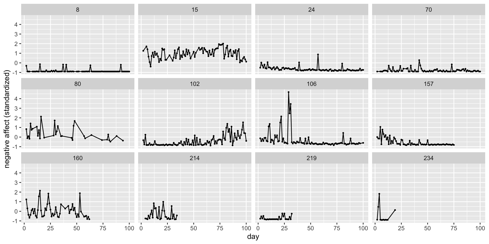

advanced MLM
The rest of the semester
- Plots
- Mr.P
- Multivariate models
- Mediation
- Distributional models
- Missing data
- Meta analysis
- IRT/Cog models
- gams!
MLM plots
Participants filled out daily affective measures and physical activity

Participant level
day01 is coded such that it is a percentage of the 100 total possible days.
Code
melsm.1 <-
brm(family = gaussian,
N_A.std ~ 1 + day01 + (1 + day01 | record_id),
prior = c(prior(normal(0, 0.2), class = Intercept),
prior(normal(0, 1), class = b),
prior(exponential(1), class = sd),
prior(exponential(1), class = sigma),
prior(lkj(2), class = cor)),
iter = 3000, warmup = 1000, chains = 4, cores = 4,
data = melsm,
backend = "cmdstanr",
file = "melsm.1") Family: gaussian
Links: mu = identity; sigma = identity
Formula: N_A.std ~ 1 + day01 + (1 + day01 | record_id)
Data: melsm (Number of observations: 13033)
Draws: 4 chains, each with iter = 3000; warmup = 1000; thin = 1;
total post-warmup draws = 8000
Group-Level Effects:
~record_id (Number of levels: 193)
Estimate Est.Error l-95% CI u-95% CI Rhat Bulk_ESS
sd(Intercept) 0.77 0.04 0.70 0.86 1.00 1597
sd(day01) 0.65 0.04 0.57 0.74 1.00 3333
cor(Intercept,day01) -0.34 0.08 -0.49 -0.18 1.00 2848
Tail_ESS
sd(Intercept) 2806
sd(day01) 4841
cor(Intercept,day01) 4793
Population-Level Effects:
Estimate Est.Error l-95% CI u-95% CI Rhat Bulk_ESS Tail_ESS
Intercept 0.03 0.06 -0.08 0.14 1.00 819 1483
day01 -0.16 0.06 -0.27 -0.05 1.00 2414 3857
Family Specific Parameters:
Estimate Est.Error l-95% CI u-95% CI Rhat Bulk_ESS Tail_ESS
sigma 0.61 0.00 0.60 0.62 1.00 14044 5922
Draws were sampled using sample(hmc). For each parameter, Bulk_ESS
and Tail_ESS are effective sample size measures, and Rhat is the potential
scale reduction factor on split chains (at convergence, Rhat = 1).We have to be careful with plotting MLMs
# A tibble: 20 × 9
day01 P_A.std day P_A.lag N_A.lag steps.pm steps.pmd record_id N_A.std
<dbl> <dbl> <dbl> <dbl> <dbl> <dbl> <dbl> <dbl> <dbl>
1 0 0.0141 41 0.0239 -0.418 0.0480 -0.000672 96 -0.351
2 0.0526 0.0141 41 0.0239 -0.418 0.0480 -0.000672 96 -0.351
3 0.105 0.0141 41 0.0239 -0.418 0.0480 -0.000672 96 -0.351
4 0.158 0.0141 41 0.0239 -0.418 0.0480 -0.000672 96 -0.351
5 0.211 0.0141 41 0.0239 -0.418 0.0480 -0.000672 96 -0.351
6 0.263 0.0141 41 0.0239 -0.418 0.0480 -0.000672 96 -0.351
7 0.316 0.0141 41 0.0239 -0.418 0.0480 -0.000672 96 -0.351
8 0.368 0.0141 41 0.0239 -0.418 0.0480 -0.000672 96 -0.351
9 0.421 0.0141 41 0.0239 -0.418 0.0480 -0.000672 96 -0.351
10 0.474 0.0141 41 0.0239 -0.418 0.0480 -0.000672 96 -0.351
11 0.526 0.0141 41 0.0239 -0.418 0.0480 -0.000672 96 -0.351
12 0.579 0.0141 41 0.0239 -0.418 0.0480 -0.000672 96 -0.351
13 0.632 0.0141 41 0.0239 -0.418 0.0480 -0.000672 96 -0.351
14 0.684 0.0141 41 0.0239 -0.418 0.0480 -0.000672 96 -0.351
15 0.737 0.0141 41 0.0239 -0.418 0.0480 -0.000672 96 -0.351
16 0.789 0.0141 41 0.0239 -0.418 0.0480 -0.000672 96 -0.351
17 0.842 0.0141 41 0.0239 -0.418 0.0480 -0.000672 96 -0.351
18 0.895 0.0141 41 0.0239 -0.418 0.0480 -0.000672 96 -0.351
19 0.947 0.0141 41 0.0239 -0.418 0.0480 -0.000672 96 -0.351
20 1 0.0141 41 0.0239 -0.418 0.0480 -0.000672 96 -0.351Code
# A tibble: 160,000 × 14
# Groups: day01, P_A.std, day, P_A.lag, N_A.lag, steps.pm, steps.pmd,
# record_id, N_A.std, .row [20]
day01 P_A.std day P_A.lag N_A.lag steps.pm steps.pmd record_id N_A.std
<dbl> <dbl> <dbl> <dbl> <dbl> <dbl> <dbl> <dbl> <dbl>
1 0 0.0141 41 0.0239 -0.418 0.0480 -0.000672 96 -0.351
2 0 0.0141 41 0.0239 -0.418 0.0480 -0.000672 96 -0.351
3 0 0.0141 41 0.0239 -0.418 0.0480 -0.000672 96 -0.351
4 0 0.0141 41 0.0239 -0.418 0.0480 -0.000672 96 -0.351
5 0 0.0141 41 0.0239 -0.418 0.0480 -0.000672 96 -0.351
6 0 0.0141 41 0.0239 -0.418 0.0480 -0.000672 96 -0.351
7 0 0.0141 41 0.0239 -0.418 0.0480 -0.000672 96 -0.351
8 0 0.0141 41 0.0239 -0.418 0.0480 -0.000672 96 -0.351
9 0 0.0141 41 0.0239 -0.418 0.0480 -0.000672 96 -0.351
10 0 0.0141 41 0.0239 -0.418 0.0480 -0.000672 96 -0.351
# ℹ 159,990 more rows
# ℹ 5 more variables: .row <int>, .chain <int>, .iteration <int>, .draw <int>,
# .epred <dbl>If we do not care about random effects, specify re_formula = NA
Code
# A tibble: 160,000 × 6
# Groups: day01, .row [20]
day01 .row .chain .iteration .draw .epred
<dbl> <int> <int> <int> <int> <dbl>
1 0 1 NA NA 1 0.0235
2 0 1 NA NA 2 0.121
3 0 1 NA NA 3 0.145
4 0 1 NA NA 4 0.0997
5 0 1 NA NA 5 0.0995
6 0 1 NA NA 6 0.0262
7 0 1 NA NA 7 0.0445
8 0 1 NA NA 8 0.0748
9 0 1 NA NA 9 0.0618
10 0 1 NA NA 10 0.0356
# ℹ 159,990 more rowsIf we want random effects we need to specify the variable to get ALL levels.
# A tibble: 3,860 × 2
day01 record_id
<dbl> <int>
1 0 1
2 0 2
3 0 3
4 0 4
5 0 5
6 0 6
7 0 7
8 0 8
9 0 9
10 0 10
# ℹ 3,850 more rows193 people * 20 = 3860
Then we need to state re_forumla = NULL (which is the default)
Code
# A tibble: 30,880,000 × 7
# Groups: day01, record_id, .row [3,860]
day01 record_id .row .chain .iteration .draw .epred
<dbl> <int> <int> <int> <int> <int> <dbl>
1 0 1 1 NA NA 1 0.105
2 0 1 1 NA NA 2 0.241
3 0 1 1 NA NA 3 0.289
4 0 1 1 NA NA 4 -0.00407
5 0 1 1 NA NA 5 -0.0554
6 0 1 1 NA NA 6 0.339
7 0 1 1 NA NA 7 0.0825
8 0 1 1 NA NA 8 0.171
9 0 1 1 NA NA 9 0.302
10 0 1 1 NA NA 10 0.136
# ℹ 30,879,990 more rowsre_formula formula helps us focus on either the average trajectory (gammas) or the group specific (person Us). If NULL (default), include all group-level effects; if NA, include no group-level effects.
160,000 = 20 (different values of X we chose) x 8000 iterations (2k x 4 chains)
30,880,000 = 20* 8000 iterations * 193 people in our dataset
Code
## https://www.tjmahr.com/sample-n-groups/
sample_n_of <- function(data, size, ...) {
dots <- quos(...)
group_ids <- data %>%
group_by(!!! dots) %>%
group_indices()
sampled_groups <- sample(unique(group_ids), size)
data %>%
filter(group_ids %in% sampled_groups)
}
melsm %>%
data_grid(day01 = seq_range(day01, n = 20), record_id) %>%
sample_n_of(5,record_id) %>%
add_epred_draws(melsm.1, re_formula = NULL) %>%
ggplot(aes(x = day01)) +
stat_lineribbon(aes(y = .epred, group = record_id, alpha = .2))Code
melsm %>%
data_grid(day01 = seq_range(day01, n = 20), record_id) %>%
sample_n_of(50,record_id) %>%
add_epred_draws(melsm.1, re_formula = NULL) %>%
ggplot(aes(x = day01)) +
stat_lineribbon(aes(y = .epred, group = record_id, color = record_id), .width = 0, show.legend = F, alpha = .4) +
stat_lineribbon(data = fixed.slope, aes(x = day01, y = .epred), show.legend = F, alpha = .5)What about interactions?
melsm.1i <-
brm(family = gaussian,
N_A.std ~ 1 + day01+ P_A.std*steps.pm + (1 + day01 | record_id),
prior = c(prior(normal(0, 0.2), class = Intercept),
prior(normal(0, 1), class = b),
prior(exponential(1), class = sd),
prior(exponential(1), class = sigma),
prior(lkj(2), class = cor)),
iter = 3000, warmup = 1000, chains = 4, cores = 4,
data = melsm,
backend = "cmdstanr",
file = "melsm.1i") Family: gaussian
Links: mu = identity; sigma = identity
Formula: N_A.std ~ 1 + day01 + P_A.std * steps.pm + (1 + day01 | record_id)
Data: melsm (Number of observations: 13033)
Draws: 4 chains, each with iter = 3000; warmup = 1000; thin = 1;
total post-warmup draws = 8000
Group-Level Effects:
~record_id (Number of levels: 193)
Estimate Est.Error l-95% CI u-95% CI Rhat Bulk_ESS
sd(Intercept) 0.77 0.04 0.70 0.86 1.00 1657
sd(day01) 0.64 0.04 0.56 0.74 1.00 3073
cor(Intercept,day01) -0.34 0.08 -0.49 -0.19 1.00 2791
Tail_ESS
sd(Intercept) 2982
sd(day01) 5536
cor(Intercept,day01) 4155
Population-Level Effects:
Estimate Est.Error l-95% CI u-95% CI Rhat Bulk_ESS Tail_ESS
Intercept 0.03 0.06 -0.07 0.14 1.00 852 1920
day01 -0.17 0.06 -0.28 -0.06 1.00 1934 3969
P_A.std -0.05 0.01 -0.07 -0.03 1.00 14252 6904
steps.pm -0.02 0.08 -0.18 0.14 1.01 1050 2024
P_A.std:steps.pm 0.02 0.02 -0.01 0.05 1.00 15176 6541
Family Specific Parameters:
Estimate Est.Error l-95% CI u-95% CI Rhat Bulk_ESS Tail_ESS
sigma 0.61 0.00 0.60 0.62 1.00 15202 5570
Draws were sampled using sample(hmc). For each parameter, Bulk_ESS
and Tail_ESS are effective sample size measures, and Rhat is the potential
scale reduction factor on split chains (at convergence, Rhat = 1). vars n mean sd median trimmed mad min max range skew kurtosis se
X1 1 13033 0.05 0.63 0.05 0.04 0.54 -1.41 2.48 3.9 0.39 1.19 0.01Code
# A tibble: 15 × 9
steps.pm P_A.std day01 day P_A.lag N_A.lag steps.pmd record_id N_A.std
<dbl> <dbl> <dbl> <dbl> <dbl> <dbl> <dbl> <dbl> <dbl>
1 -1.41 -1 0.5 41 0.0239 -0.418 -0.000672 96 -0.351
2 -1.41 0 0.5 41 0.0239 -0.418 -0.000672 96 -0.351
3 -1.41 1 0.5 41 0.0239 -0.418 -0.000672 96 -0.351
4 -0.441 -1 0.5 41 0.0239 -0.418 -0.000672 96 -0.351
5 -0.441 0 0.5 41 0.0239 -0.418 -0.000672 96 -0.351
6 -0.441 1 0.5 41 0.0239 -0.418 -0.000672 96 -0.351
7 0.533 -1 0.5 41 0.0239 -0.418 -0.000672 96 -0.351
8 0.533 0 0.5 41 0.0239 -0.418 -0.000672 96 -0.351
9 0.533 1 0.5 41 0.0239 -0.418 -0.000672 96 -0.351
10 1.51 -1 0.5 41 0.0239 -0.418 -0.000672 96 -0.351
11 1.51 0 0.5 41 0.0239 -0.418 -0.000672 96 -0.351
12 1.51 1 0.5 41 0.0239 -0.418 -0.000672 96 -0.351
13 2.48 -1 0.5 41 0.0239 -0.418 -0.000672 96 -0.351
14 2.48 0 0.5 41 0.0239 -0.418 -0.000672 96 -0.351
15 2.48 1 0.5 41 0.0239 -0.418 -0.000672 96 -0.3515 * 3 = 15 rows
Code
# A tibble: 120,000 × 14
# Groups: steps.pm, P_A.std, day01, day, P_A.lag, N_A.lag, steps.pmd,
# record_id, N_A.std, .row [15]
steps.pm P_A.std day01 day P_A.lag N_A.lag steps.pmd record_id N_A.std
<dbl> <dbl> <dbl> <dbl> <dbl> <dbl> <dbl> <dbl> <dbl>
1 -1.41 -1 0.5 41 0.0239 -0.418 -0.000672 96 -0.351
2 -1.41 -1 0.5 41 0.0239 -0.418 -0.000672 96 -0.351
3 -1.41 -1 0.5 41 0.0239 -0.418 -0.000672 96 -0.351
4 -1.41 -1 0.5 41 0.0239 -0.418 -0.000672 96 -0.351
5 -1.41 -1 0.5 41 0.0239 -0.418 -0.000672 96 -0.351
6 -1.41 -1 0.5 41 0.0239 -0.418 -0.000672 96 -0.351
7 -1.41 -1 0.5 41 0.0239 -0.418 -0.000672 96 -0.351
8 -1.41 -1 0.5 41 0.0239 -0.418 -0.000672 96 -0.351
9 -1.41 -1 0.5 41 0.0239 -0.418 -0.000672 96 -0.351
10 -1.41 -1 0.5 41 0.0239 -0.418 -0.000672 96 -0.351
# ℹ 119,990 more rows
# ℹ 5 more variables: .row <int>, .chain <int>, .iteration <int>, .draw <int>,
# .epred <dbl>12 * 8000 samples = 120,000 rows
Code
melsm %>%
data_grid(steps.pm = seq_range(steps.pm, n = 5), P_A.std = c(-1,0,1), day01 = .5, .model = melsm) %>%
add_epred_draws(melsm.1i, re_formula = NA) %>%
ggplot( aes(x = steps.pm, y = N_A.std)) +
stat_lineribbon(aes(y = .epred, group = P_A.std, color = as.factor(P_A.std)), .width = 0, show.legend = T) Making predictions
We often want to make predictions for different groups or individuals. We make predictions using/borrowing information from other individuals, through partial pooling. This improves our predictions.
Can we improve it further? Do we stick with these standard MLM based predictions? What if we want to look at sub samples in our data, especially rarer ones (e.g., gay black republicans) or are worried some are over-represented (e.g., age and high education/SES)
Mr.P
Improving predictions by incorporating outside (of the model) information. MRP = multilevel regression with poststratification
One of the biggest problems with psych data is that it is unrepresentative. (Do you trust undergrads or adults off the street wanting to help science?)
If we know the distribution of the broader population, we can reweight (post-stratify) our results to get more accurate estimates. We take the observed sample to reconstruct the rest of the population
Mr.P
Mr = Multi-level regression aka MLM P = poststratification, with post for posterior and stratification for stratify.
You take your posterior and make predictions based on different strata
Weighted average of predicted values, where weights are the population shares of each category
Weighting vs postratifying
Weighting is done all the time with data. It gives more or less “weight” to observations that are over or under sampled. Some people “count” more than others in the service of getting data that represents some population.
Poststratification is similar in that it weights the posterior samples rather than the observations.
Why is this preferred? A few reasons, but mainly one can make generalization to new groups or groups with little data. Rather than weighting those specific individuals, partial pooling from other information will help with learning
What do we need? A reliable data source (such as a census) that gives us the population weights. Data can be re-weighted based on many different categories, not just one: for example, we could post-stratify based on age, education, state of residence, etc.
Don’t need to even attempt a random sample. All we need is a sample that is large and diverse enough + population data (e.g., from the census).
Estimating the proportion of heterosexual women who kept their maiden name after marriage.
https://www.monicaalexander.com/posts/2019-08-07-mrp/ https://bookdown.org/content/4857/models-with-memory.html#summary-bonus-post-stratification-in-an-example
# A tibble: 4,413 × 5
kept_name state_name age_group decade_married educ_group
<dbl> <chr> <chr> <chr> <chr>
1 0 ohio 50 1979 >BA
2 0 virginia 35 1999 >BA
3 1 new york 35 2009 >BA
4 0 rhode island 55 1999 >BA
5 0 illinois 35 2009 >BA
6 0 north carolina 25 2009 >BA
7 1 iowa 35 1999 >BA
8 1 texas 35 2009 >BA
9 0 south dakota 35 1999 >BA
10 0 texas 35 2009 >BA
# ℹ 4,403 more rows# A tibble: 6,058 × 5
state_name age_group decade_married educ_group n
<chr> <chr> <chr> <chr> <dbl>
1 alabama 25 1999 <BA 19012
2 alabama 25 2009 <BA 37488
3 alabama 25 1999 >BA 959
4 alabama 25 2009 >BA 5319
5 alabama 25 1999 BA 2986
6 alabama 25 2009 BA 14261
7 alaska 25 1999 <BA 3320
8 alaska 25 2009 <BA 7001
9 alaska 25 1999 >BA 159
10 alaska 25 2009 >BA 435
# ℹ 6,048 more rowsmlm.mrp <-
brm(family = binomial,
kept_name | trials(1) ~ 1 + (1 | age_group) + (1 | decade_married) + (1 | educ_group) + (1 | state_name),
prior = c(prior(normal(-1, 1), class = Intercept),
prior(exponential(1), class = sd)),
iter = 2000, warmup = 1000, chains = 4, cores = 4,
control = list(adapt_delta = .98),
data = d,
backend = "cmdstanr",
file = "mlm.mrp") Family: binomial
Links: mu = logit
Formula: kept_name | trials(1) ~ 1 + (1 | age_group) + (1 | decade_married) + (1 | educ_group) + (1 | state_name)
Data: d (Number of observations: 4373)
Draws: 4 chains, each with iter = 2000; warmup = 1000; thin = 1;
total post-warmup draws = 4000
Group-Level Effects:
~age_group (Number of levels: 11)
Estimate Est.Error l-95% CI u-95% CI Rhat Bulk_ESS Tail_ESS
sd(Intercept) 1.15 0.29 0.72 1.88 1.00 1470 2235
~decade_married (Number of levels: 5)
Estimate Est.Error l-95% CI u-95% CI Rhat Bulk_ESS Tail_ESS
sd(Intercept) 1.00 0.39 0.49 2.03 1.00 2246 2946
~educ_group (Number of levels: 4)
Estimate Est.Error l-95% CI u-95% CI Rhat Bulk_ESS Tail_ESS
sd(Intercept) 0.92 0.49 0.35 2.17 1.00 2553 2773
~state_name (Number of levels: 52)
Estimate Est.Error l-95% CI u-95% CI Rhat Bulk_ESS Tail_ESS
sd(Intercept) 0.25 0.06 0.15 0.38 1.00 1407 2328
Population-Level Effects:
Estimate Est.Error l-95% CI u-95% CI Rhat Bulk_ESS Tail_ESS
Intercept -0.72 0.63 -1.99 0.50 1.00 1966 2475
Draws were sampled using sample(hmc). For each parameter, Bulk_ESS
and Tail_ESS are effective sample size measures, and Rhat is the potential
scale reduction factor on split chains (at convergence, Rhat = 1). [1] "b_Intercept"
[2] "sd_age_group__Intercept"
[3] "sd_decade_married__Intercept"
[4] "sd_educ_group__Intercept"
[5] "sd_state_name__Intercept"
[6] "r_age_group[25,Intercept]"
[7] "r_age_group[30,Intercept]"
[8] "r_age_group[35,Intercept]"
[9] "r_age_group[40,Intercept]"
[10] "r_age_group[45,Intercept]"
[11] "r_age_group[50,Intercept]"
[12] "r_age_group[55,Intercept]"
[13] "r_age_group[60,Intercept]"
[14] "r_age_group[65,Intercept]"
[15] "r_age_group[70,Intercept]"
[16] "r_age_group[75,Intercept]"
[17] "r_decade_married[1979,Intercept]"
[18] "r_decade_married[1989,Intercept]"
[19] "r_decade_married[1999,Intercept]"
[20] "r_decade_married[2009,Intercept]"
[21] "r_decade_married[2019,Intercept]"
[22] "r_educ_group[<BA,Intercept]"
[23] "r_educ_group[>BA,Intercept]"
[24] "r_educ_group[BA,Intercept]"
[25] "r_educ_group[NA,Intercept]"
[26] "r_state_name[alabama,Intercept]"
[27] "r_state_name[alaska,Intercept]"
[28] "r_state_name[arizona,Intercept]"
[29] "r_state_name[arkansas,Intercept]"
[30] "r_state_name[california,Intercept]"
[31] "r_state_name[colorado,Intercept]"
[32] "r_state_name[connecticut,Intercept]"
[33] "r_state_name[delaware,Intercept]"
[34] "r_state_name[district.of.columbia,Intercept]"
[35] "r_state_name[florida,Intercept]"
[36] "r_state_name[georgia,Intercept]"
[37] "r_state_name[hawaii,Intercept]"
[38] "r_state_name[idaho,Intercept]"
[39] "r_state_name[illinois,Intercept]"
[40] "r_state_name[indiana,Intercept]"
[41] "r_state_name[iowa,Intercept]"
[42] "r_state_name[kansas,Intercept]"
[43] "r_state_name[kentucky,Intercept]"
[44] "r_state_name[louisiana,Intercept]"
[45] "r_state_name[maine,Intercept]"
[46] "r_state_name[maryland,Intercept]"
[47] "r_state_name[massachusetts,Intercept]"
[48] "r_state_name[michigan,Intercept]"
[49] "r_state_name[minnesota,Intercept]"
[50] "r_state_name[mississippi,Intercept]"
[51] "r_state_name[missouri,Intercept]"
[52] "r_state_name[montana,Intercept]"
[53] "r_state_name[nebraska,Intercept]"
[54] "r_state_name[nevada,Intercept]"
[55] "r_state_name[new.hampshire,Intercept]"
[56] "r_state_name[new.jersey,Intercept]"
[57] "r_state_name[new.mexico,Intercept]"
[58] "r_state_name[new.york,Intercept]"
[59] "r_state_name[north.carolina,Intercept]"
[60] "r_state_name[north.dakota,Intercept]"
[61] "r_state_name[ohio,Intercept]"
[62] "r_state_name[oklahoma,Intercept]"
[63] "r_state_name[oregon,Intercept]"
[64] "r_state_name[pennsylvania,Intercept]"
[65] "r_state_name[puerto.rico,Intercept]"
[66] "r_state_name[rhode.island,Intercept]"
[67] "r_state_name[south.carolina,Intercept]"
[68] "r_state_name[south.dakota,Intercept]"
[69] "r_state_name[tennessee,Intercept]"
[70] "r_state_name[texas,Intercept]"
[71] "r_state_name[utah,Intercept]"
[72] "r_state_name[vermont,Intercept]"
[73] "r_state_name[virginia,Intercept]"
[74] "r_state_name[washington,Intercept]"
[75] "r_state_name[west.virginia,Intercept]"
[76] "r_state_name[wisconsin,Intercept]"
[77] "r_state_name[wyoming,Intercept]"
[78] "lprior"
[79] "lp__"
[80] "accept_stat__"
[81] "treedepth__"
[82] "stepsize__"
[83] "divergent__"
[84] "n_leapfrog__"
[85] "energy__" Code
posterior_samples(mlm.mrp) %>%
select(starts_with("sd_")) %>%
set_names(str_c("sigma[", c("age", "decade~married", "education", "state"), "]")) %>%
pivot_longer(everything()) %>%
group_by(name) %>%
median_qi(.width = seq(from = .70, to = .95, by = .1)) %>%
ggplot(aes(x = value, xmin = .lower, xmax = .upper, y = reorder(name, value))) +
geom_interval(aes(alpha = .width), color = "orange3") +
scale_y_discrete(labels = ggplot2:::parse_safe) +
scale_alpha_continuous("CI width", range = c(.7, .15)) +
xlim(0, NA) +
theme(axis.text.y = element_text(hjust = 0),
panel.grid.major.y = element_blank())
Census data we will use to make predictions. We will make predictions for every combination of variable we are interested in (state, age, decade married, edu)
Code
# A tibble: 6,058 × 6
state_name age_group decade_married educ_group n prop
<chr> <chr> <chr> <chr> <dbl> <dbl>
1 alabama 25 1999 <BA 19012 0.00414
2 alabama 25 2009 <BA 37488 0.00816
3 alabama 25 1999 >BA 959 0.000209
4 alabama 25 2009 >BA 5319 0.00116
5 alabama 25 1999 BA 2986 0.000650
6 alabama 25 2009 BA 14261 0.00310
7 alaska 25 1999 <BA 3320 0.000723
8 alaska 25 2009 <BA 7001 0.00152
9 alaska 25 1999 >BA 159 0.0000346
10 alaska 25 2009 >BA 435 0.0000947
# ℹ 6,048 more rowsp <- mlm.mrp %>%
add_predicted_draws(newdata = age_prop %>%
filter(age_group > 20,
age_group < 80,
decade_married > 1969),
allow_new_levels = T)
p# A tibble: 24,232,000 × 11
# Groups: state_name, age_group, decade_married, educ_group, n, prop, .row
# [6,058]
state_name age_group decade_married educ_group n prop .row .chain
<chr> <chr> <chr> <chr> <dbl> <dbl> <int> <int>
1 alabama 25 1999 <BA 19012 0.00414 1 NA
2 alabama 25 1999 <BA 19012 0.00414 1 NA
3 alabama 25 1999 <BA 19012 0.00414 1 NA
4 alabama 25 1999 <BA 19012 0.00414 1 NA
5 alabama 25 1999 <BA 19012 0.00414 1 NA
6 alabama 25 1999 <BA 19012 0.00414 1 NA
7 alabama 25 1999 <BA 19012 0.00414 1 NA
8 alabama 25 1999 <BA 19012 0.00414 1 NA
9 alabama 25 1999 <BA 19012 0.00414 1 NA
10 alabama 25 1999 <BA 19012 0.00414 1 NA
# ℹ 24,231,990 more rows
# ℹ 3 more variables: .iteration <int>, .draw <int>, .prediction <int>6,058 census categories * 4,000 samples = 24,232,000
If we group the results by age_group and .draw, we can sum the product of the posterior predictions and the weights (prop), which will leave us with 4,000 stratified posterior draws for each of the 11 levels of age_group
\[\frac{\sum_i N_i p_i}{\sum_i N_i}\]
Code
# A tibble: 11 × 7
age_group kept_name_predict .lower .upper .width .point .interval
<chr> <dbl> <dbl> <dbl> <dbl> <chr> <chr>
1 25 0.175 0.0926 0.278 0.95 mean qi
2 30 0.182 0.117 0.261 0.95 mean qi
3 35 0.218 0.150 0.299 0.95 mean qi
4 40 0.244 0.172 0.329 0.95 mean qi
5 45 0.277 0.201 0.364 0.95 mean qi
6 50 0.301 0.219 0.392 0.95 mean qi
7 55 0.324 0.232 0.424 0.95 mean qi
8 60 0.437 0.328 0.554 0.95 mean qi
9 65 0.561 0.418 0.706 0.95 mean qi
10 70 0.515 0.297 0.754 0.95 mean qi
11 75 0.226 0.0431 0.530 0.95 mean qi Code
library(patchwork)
levels <- c("raw data", "multilevel", "MRP")
p1 <-
# compute the proportions from the data
d %>%
group_by(age_group, kept_name) %>%
summarise(n = n()) %>%
group_by(age_group) %>%
mutate(prop = n/sum(n),
type = factor("raw data", levels = levels)) %>%
filter(kept_name == 1, age_group < 80, age_group > 20) %>%
ggplot(aes(x = prop, y = age_group)) +
geom_point() +
scale_x_continuous(breaks = c(0, .5, 1), limits = c(0, 1)) +
facet_wrap(~type)
nd <- distinct(d, age_group) %>% arrange(age_group)
p2 <-
fitted(mlm.mrp,
re_formula = ~ (1 | age_group),
newdata = nd) %>%
data.frame() %>%
bind_cols(nd) %>%
mutate(prop = Estimate,
type = factor("multilevel", levels = levels)) %>%
ggplot(aes(x = prop, xmin = Q2.5, xmax = Q97.5, y = age_group)) +
geom_pointrange(color = "blue2", size = 0.8, fatten = 2) +
scale_x_continuous(breaks = c(0, .5, 1), limits = c(0, 1)) +
scale_y_discrete(labels = NULL) +
facet_wrap(~type)
p3 <-
pp %>%
mutate(type = factor("MRP", levels = levels)) %>%
ggplot(aes(x = kept_name_predict, xmin = .lower, xmax = .upper, y = age_group)) +
geom_pointrange(color = "orange2", size = 0.8, fatten = 2) +
scale_x_continuous(breaks = c(0, .5, 1), limits = c(0, 1)) +
scale_y_discrete(labels = NULL) +
facet_wrap(~type)
# combine!
(p1 | p2 | p3) +
plot_annotation(title = "Proportion of women keeping name after marriage, by age")Can also be done simply in {marginaleffects}
Mr.P Not limited to surveys
Example (using brms) with experimental data – can you generalize from your sample of undergraduates to other undergraduates at your university, let alone undergraduates in general, let alone young adults, to say nothing about the population of humans. https://arxiv.org/pdf/1906.11323.pdf
More info: https://marginaleffects.com/articles/mrp.html
recent example
https://osf.io/preprints/psyarxiv/fcm3n/

Multivariate models
Any model that has more than 1 DV. While common within SEM frameworks, multivariate models are not often used within standard linear modeling (outside of MANOVA), mostly because of computational difficulties.
When do you want to use multivariate models? All the time! Mediation, path models, distributional models, IRT models, parallel process MLMs, etc etc. What are advantages? Fewer models than doing separate, additional parameters, novel Qs.
We’ve already done one of these: the multinomial logistic
multivariate MLMs
mv.1 <-
brm(family = gaussian,
mvbind(CON, DAN) ~ 1 + time + (1 + time | ID),
prior = c(prior(normal(0, 1.5), class = Intercept),
prior(normal(0, 1.5), class = b),
prior(lkj(2), class = cor),
prior(lkj(2), class = rescor)),
iter = 4000, warmup = 1000, chains = 4, cores = 4,
file = "mv.1",
backend = "cmdstanr",
data = mlm) Family: MV(gaussian, gaussian)
Links: mu = identity; sigma = identity
mu = identity; sigma = identity
Formula: CON ~ 1 + time + (1 + time | ID)
DAN ~ 1 + time + (1 + time | ID)
Data: mlm (Number of observations: 225)
Draws: 4 chains, each with iter = 4000; warmup = 1000; thin = 1;
total post-warmup draws = 12000
Group-Level Effects:
~ID (Number of levels: 91)
Estimate Est.Error l-95% CI u-95% CI Rhat Bulk_ESS
sd(CON_Intercept) 0.06 0.01 0.05 0.07 1.00 3633
sd(CON_time) 0.00 0.00 0.00 0.01 1.00 1308
sd(DAN_Intercept) 0.04 0.01 0.03 0.05 1.00 2647
sd(DAN_time) 0.00 0.00 0.00 0.01 1.00 862
cor(CON_Intercept,CON_time) -0.13 0.39 -0.77 0.70 1.00 6805
cor(DAN_Intercept,DAN_time) -0.04 0.41 -0.75 0.77 1.00 6734
Tail_ESS
sd(CON_Intercept) 4618
sd(CON_time) 1914
sd(DAN_Intercept) 2757
sd(DAN_time) 426
cor(CON_Intercept,CON_time) 6264
cor(DAN_Intercept,DAN_time) 6734
Population-Level Effects:
Estimate Est.Error l-95% CI u-95% CI Rhat Bulk_ESS Tail_ESS
CON_Intercept 0.19 0.01 0.18 0.21 1.00 4740 7147
DAN_Intercept 0.20 0.01 0.19 0.22 1.00 7390 8949
CON_time -0.00 0.00 -0.01 0.00 1.00 9513 10010
DAN_time -0.01 0.00 -0.01 -0.00 1.00 11311 7447
Family Specific Parameters:
Estimate Est.Error l-95% CI u-95% CI Rhat Bulk_ESS Tail_ESS
sigma_CON 0.05 0.00 0.04 0.05 1.00 3485 4099
sigma_DAN 0.05 0.00 0.04 0.06 1.00 1319 444
Residual Correlations:
Estimate Est.Error l-95% CI u-95% CI Rhat Bulk_ESS Tail_ESS
rescor(CON,DAN) 0.12 0.09 -0.05 0.30 1.00 2631 1949
Draws were sampled using sample(hmc). For each parameter, Bulk_ESS
and Tail_ESS are effective sample size measures, and Rhat is the potential
scale reduction factor on split chains (at convergence, Rhat = 1). Estimate Est.Error Q2.5 Q97.5
CON_Intercept 0.194401583 0.007755149 0.179150800 0.2096571000
DAN_Intercept 0.203508451 0.006666302 0.190382950 0.2165806000
CON_time -0.002897454 0.002302044 -0.007350416 0.0016120035
DAN_time -0.005130118 0.002269263 -0.009560008 -0.0007081081mv.1 %>%
gather_draws(sd_ID__CON_Intercept, sd_ID__CON_time, sd_ID__DAN_Intercept, sd_ID__DAN_time, cor_ID__CON_Intercept__CON_time, cor_ID__DAN_Intercept__DAN_time, rescor__CON__DAN) %>%
median_qi()# A tibble: 7 × 7
.variable .value .lower .upper .width .point .interval
<chr> <dbl> <dbl> <dbl> <dbl> <chr> <chr>
1 cor_ID__CON_Intercept__CON_t… -0.175 -7.68e-1 0.699 0.95 median qi
2 cor_ID__DAN_Intercept__DAN_t… -0.0640 -7.53e-1 0.766 0.95 median qi
3 rescor__CON__DAN 0.121 -5.33e-2 0.298 0.95 median qi
4 sd_ID__CON_Intercept 0.0563 4.51e-2 0.0704 0.95 median qi
5 sd_ID__CON_time 0.00397 1.96e-4 0.0126 0.95 median qi
6 sd_ID__DAN_Intercept 0.0413 2.97e-2 0.0537 0.95 median qi
7 sd_ID__DAN_time 0.00378 1.42e-4 0.0127 0.95 median qi correlation between slopes
Code
library(correlation)
CON_slope <- mv.1 %>%
spread_draws(r_ID__CON[ID,time]) %>%
filter(time == "time") %>%
group_by(ID) %>%
median_qi(r_ID__CON) %>%
select(ID, r_ID__CON)
DAN_slope <- mv.1 %>%
spread_draws(r_ID__DAN[ID,time]) %>%
filter(time == "time") %>%
group_by(ID) %>%
median_qi(r_ID__DAN) %>%
select(ID, r_ID__DAN)
slope_cor<- left_join(CON_slope,DAN_slope)
plot(cor_test(slope_cor, "r_ID__CON", "r_ID__DAN"))Everything is SEM
Structural equation modeling (SEM) is the most popular way to handle multiple DVs. SEM is also known as covariance structure analysis, which really means unstandardized correlations. We can fit some simple SEM models using brms!
Also, SEM is really regression but a broader form. Also SEM can be equivalent to MLM in many respects.
correlations (as multivariate models)
mv.1c <-
brm(family = gaussian,
bf(mvbind(CON, DAN) ~ 1) +
set_rescor(TRUE),
prior = c(prior(normal(0, 1.5), class = Intercept, resp = CON),
prior(normal(0, 1.5), class = Intercept, resp = DAN),
prior(normal(0, 1.5), class = sigma, resp = CON),
prior(normal(0, 1.5), class = sigma, resp = DAN),
prior(lkj(2), class = rescor)),
iter = 4000, warmup = 1000, chains = 4, cores = 4,
file = "mv.1c",
backend = "cmdstanr",
data = mlm) Family: MV(gaussian, gaussian)
Links: mu = identity; sigma = identity
mu = identity; sigma = identity
Formula: CON ~ 1
DAN ~ 1
Data: mlm (Number of observations: 225)
Draws: 4 chains, each with iter = 4000; warmup = 1000; thin = 1;
total post-warmup draws = 12000
Population-Level Effects:
Estimate Est.Error l-95% CI u-95% CI Rhat Bulk_ESS Tail_ESS
CON_Intercept 0.19 0.00 0.18 0.20 1.00 14697 9363
DAN_Intercept 0.19 0.00 0.19 0.20 1.00 15634 9714
Family Specific Parameters:
Estimate Est.Error l-95% CI u-95% CI Rhat Bulk_ESS Tail_ESS
sigma_CON 0.07 0.00 0.07 0.08 1.00 12996 8947
sigma_DAN 0.06 0.00 0.06 0.07 1.00 12810 8728
Residual Correlations:
Estimate Est.Error l-95% CI u-95% CI Rhat Bulk_ESS Tail_ESS
rescor(CON,DAN) 0.26 0.06 0.14 0.38 1.00 12059 8823
Draws were sampled using sample(hmc). For each parameter, Bulk_ESS
and Tail_ESS are effective sample size measures, and Rhat is the potential
scale reduction factor on split chains (at convergence, Rhat = 1).# A tibble: 1 × 6
rescor__CON__DAN .lower .upper .width .point .interval
<dbl> <dbl> <dbl> <dbl> <chr> <chr>
1 0.262 0.136 0.380 0.95 mean qi Make it robust
mv.1cr <-
brm(family = student,
bf(mvbind(CON, DAN) ~ 1) +
set_rescor(TRUE),
prior = c(prior(gamma(2, .1), class = nu),
prior(normal(0, 1.5), class = Intercept, resp = CON),
prior(normal(0, 1.5), class = Intercept, resp = DAN),
prior(normal(0, 1.5), class = sigma, resp = CON),
prior(normal(0, 1.5), class = sigma, resp = DAN),
prior(lkj(2), class = rescor)),
iter = 4000, warmup = 1000, chains = 4, cores = 4,
file = "mv.1cr",
backend = "cmdstanr",
data = mlm) Family: MV(student, student)
Links: mu = identity; sigma = identity; nu = identity
mu = identity; sigma = identity; nu = identity
Formula: CON ~ 1
DAN ~ 1
Data: mlm (Number of observations: 225)
Draws: 4 chains, each with iter = 4000; warmup = 1000; thin = 1;
total post-warmup draws = 12000
Population-Level Effects:
Estimate Est.Error l-95% CI u-95% CI Rhat Bulk_ESS Tail_ESS
CON_Intercept 0.19 0.00 0.18 0.20 1.00 18108 9153
DAN_Intercept 0.19 0.00 0.18 0.20 1.00 17472 9281
Family Specific Parameters:
Estimate Est.Error l-95% CI u-95% CI Rhat Bulk_ESS Tail_ESS
sigma_CON 0.07 0.00 0.06 0.08 1.00 11443 9110
sigma_DAN 0.06 0.00 0.05 0.07 1.00 10716 8829
nu 20.82 11.04 8.07 50.10 1.00 10262 9456
nu_CON 1.00 0.00 1.00 1.00 NA NA NA
nu_DAN 1.00 0.00 1.00 1.00 NA NA NA
Residual Correlations:
Estimate Est.Error l-95% CI u-95% CI Rhat Bulk_ESS Tail_ESS
rescor(CON,DAN) 0.26 0.07 0.12 0.38 1.00 14092 8842
Draws were sampled using sample(hmc). For each parameter, Bulk_ESS
and Tail_ESS are effective sample size measures, and Rhat is the potential
scale reduction factor on split chains (at convergence, Rhat = 1).Residual correlations are useful because they can be conceptualized as what is left over in the DV after accounting for your predictors. Or it is a measure of your DV controlling/adjusting for the predictors.
What can we do with this outside of looking at correlations?
Simple mediation
\[M = i_M + a X + e_M\] \[Y = i_Y + c' X + b M + e_Y\]
Code
library(ggdag)
dag_coords <-
tibble(name = c("X", "M", "Y"),
x = c(1, 2, 3),
y = c(2, 1, 2))
p1 <-
dagify(M ~ X,
Y ~ X + M,
coords = dag_coords) %>%
ggplot(aes(x = x, y = y, xend = xend, yend = yend)) +
geom_dag_point(color = "black", alpha = 1/4, size = 10) +
geom_dag_text(color = "black") +
geom_dag_edges(edge_color = "black") +
scale_x_continuous(NULL, breaks = NULL, expand = c(.1, .1)) +
scale_y_continuous(NULL, breaks = NULL, expand = c(.1, .1)) +
theme_bw() +
theme(panel.grid = element_blank())+
ggtitle("direct + indirect effect")
p2 <-
dagify(Y ~ X,
coords = dag_coords) %>%
ggplot(aes(x = x, y = y, xend = xend, yend = yend)) +
geom_dag_point(color = "black", alpha = 1/4, size = 10) +
geom_dag_text(color = "black") +
geom_dag_edges(edge_color = "black") +
scale_x_continuous(NULL, breaks = NULL, expand = c(.1, .1)) +
scale_y_continuous(NULL, breaks = NULL, expand = c(.1, .1)) +
theme_bw() +
theme(panel.grid = element_blank())+
ggtitle("Total effect")
library(patchwork)
p2 | p1Code
X <- rnorm(100)
M <- 0.5*X + rnorm(100)
Y <- 0.7*M + rnorm(100)
Data <- data.frame(X = X, Y = Y, M = M)
# describe your equations
y_model <- bf(Y ~ 1 + X + M)
m_model <- bf(M ~ 1 + X)
# simultaneously estimate
med.1 <-
brm(family = gaussian,
y_model + m_model + set_rescor(FALSE),
data = Data,
cores = 4,
backend = "cmdstanr",
file = "med.1") Family: MV(gaussian, gaussian)
Links: mu = identity; sigma = identity
mu = identity; sigma = identity
Formula: Y ~ 1 + X + M
M ~ 1 + X
Data: Data (Number of observations: 100)
Draws: 4 chains, each with iter = 2000; warmup = 1000; thin = 1;
total post-warmup draws = 4000
Population-Level Effects:
Estimate Est.Error l-95% CI u-95% CI Rhat Bulk_ESS Tail_ESS
Y_Intercept -0.03 0.09 -0.20 0.15 1.00 6280 2928
M_Intercept -0.14 0.10 -0.34 0.06 1.00 6715 2906
Y_X 0.27 0.10 0.08 0.47 1.00 5434 3172
Y_M 0.75 0.09 0.56 0.92 1.00 5293 2808
M_X 0.25 0.11 0.03 0.47 1.00 5652 3212
Family Specific Parameters:
Estimate Est.Error l-95% CI u-95% CI Rhat Bulk_ESS Tail_ESS
sigma_Y 0.91 0.07 0.79 1.06 1.00 5265 3088
sigma_M 1.02 0.07 0.89 1.18 1.00 6467 2876
Draws were sampled using sample(hmc). For each parameter, Bulk_ESS
and Tail_ESS are effective sample size measures, and Rhat is the potential
scale reduction factor on split chains (at convergence, Rhat = 1).Indirect effects
[1] "b_Y_Intercept" "b_M_Intercept" "b_Y_X" "b_Y_M"
[5] "b_M_X" "sigma_Y" "sigma_M" "lprior"
[9] "lp__" "accept_stat__" "treedepth__" "stepsize__"
[13] "divergent__" "n_leapfrog__" "energy__" # A tibble: 4,000 × 6
.chain .iteration .draw b_Y_M b_M_X b_Y_X
<int> <int> <int> <dbl> <dbl> <dbl>
1 1 1 1 0.723 0.321 0.361
2 1 2 2 0.823 0.195 0.254
3 1 3 3 0.697 0.314 0.312
4 1 4 4 0.787 0.133 0.242
5 1 5 5 0.675 0.362 0.281
6 1 6 6 0.847 0.247 0.223
7 1 7 7 0.304 0.359 0.186
8 1 8 8 0.695 0.318 0.248
9 1 9 9 0.706 0.165 0.420
10 1 10 10 0.736 0.298 0.156
# ℹ 3,990 more rowscalculate indirect effects
Code
# A tibble: 1 × 12
indirect indirect.lower indirect.upper direct direct.lower direct.upper total
<dbl> <dbl> <dbl> <dbl> <dbl> <dbl> <dbl>
1 0.184 0.0256 0.371 0.273 0.0804 0.467 0.460
# ℹ 5 more variables: total.lower <dbl>, total.upper <dbl>, .width <dbl>,
# .point <chr>, .interval <chr>priors for mediation
7 parameters to estimate
Code
med.2 <-
brm(family = gaussian,
y_model + m_model + set_rescor(FALSE),
prior = c(prior(normal(0, 1), class = Intercept, resp = M),
prior(normal(0, 1), class = Intercept, resp = Y),
prior(normal(0, 2), class = b, coef = X, resp = M),
prior(normal(0, 2), class = b, coef = M, resp = Y),
prior(normal(0, 2), class = b, coef = X, resp = Y),
prior(exponential(1), class = sigma, resp = M),
prior(exponential(1), class = sigma, resp = Y)),
data = Data,
cores = 4,
backend = "cmdstanr",
file = "med.2") Family: MV(gaussian, gaussian)
Links: mu = identity; sigma = identity
mu = identity; sigma = identity
Formula: Y ~ 1 + X + M
M ~ 1 + X
Data: Data (Number of observations: 100)
Draws: 4 chains, each with iter = 2000; warmup = 1000; thin = 1;
total post-warmup draws = 4000
Population-Level Effects:
Estimate Est.Error l-95% CI u-95% CI Rhat Bulk_ESS Tail_ESS
Y_Intercept -0.02 0.09 -0.21 0.15 1.00 5210 3072
M_Intercept -0.13 0.10 -0.33 0.07 1.00 6012 2669
Y_X 0.27 0.10 0.07 0.47 1.00 5712 3234
Y_M 0.75 0.09 0.57 0.93 1.00 6451 3192
M_X 0.25 0.11 0.05 0.46 1.00 5492 2983
Family Specific Parameters:
Estimate Est.Error l-95% CI u-95% CI Rhat Bulk_ESS Tail_ESS
sigma_Y 0.91 0.07 0.79 1.05 1.00 5801 3179
sigma_M 1.02 0.07 0.89 1.17 1.00 5559 3223
Draws were sampled using sample(hmc). For each parameter, Bulk_ESS
and Tail_ESS are effective sample size measures, and Rhat is the potential
scale reduction factor on split chains (at convergence, Rhat = 1).Code
# A tibble: 1 × 6
indirect .lower .upper .width .point .interval
<dbl> <dbl> <dbl> <dbl> <chr> <chr>
1 0.186 0.0360 0.354 0.95 median qi Multiple Predictors, mediators and outcomes
Code
MultX_coords <-
tibble(name = c("X1","X2","X3", "M", "Y"),
x = c(1,1,1, 2, 3),
y = c(2,1,3, 1, 2))
X1 <-
dagify(M ~ X1 + X2 + X3,
Y ~ X1 + X2 + X3 + M,
coords = MultX_coords) %>%
ggplot(aes(x = x, y = y, xend = xend, yend = yend)) +
geom_dag_point(color = "black", alpha = 1/4, size = 10) +
geom_dag_text(color = "black") +
geom_dag_edges(edge_color = "black") +
scale_x_continuous(NULL, breaks = NULL, expand = c(.1, .1)) +
scale_y_continuous(NULL, breaks = NULL, expand = c(.1, .1)) +
theme_bw() +
theme(panel.grid = element_blank())+
ggtitle("direct + indirect effect")
X1 Family: MV(gaussian, gaussian)
Links: mu = identity; sigma = identity
mu = identity; sigma = identity
Formula: dv ~ 1 + X1 + X2 + X3 + med
med ~ 1 + X1 + X2 + X3
Data: mult.X (Number of observations: 1000)
Draws: 4 chains, each with iter = 2000; warmup = 1000; thin = 1;
total post-warmup draws = 4000
Population-Level Effects:
Estimate Est.Error l-95% CI u-95% CI Rhat Bulk_ESS Tail_ESS
dv_Intercept -0.09 0.04 -0.16 -0.01 1.00 6626 2807
med_Intercept 0.00 0.03 -0.06 0.06 1.00 5649 3349
dv_X1 0.05 0.05 -0.05 0.14 1.00 2684 3091
dv_X2 0.58 0.04 0.51 0.65 1.00 5743 2598
dv_X3 1.00 0.05 0.90 1.10 1.00 2522 3050
dv_med -0.02 0.04 -0.09 0.05 1.00 2258 2869
med_X1 -0.93 0.03 -0.99 -0.87 1.00 5494 3040
med_X2 0.03 0.03 -0.03 0.09 1.00 5379 3193
med_X3 0.98 0.03 0.92 1.04 1.00 5688 2817
Family Specific Parameters:
Estimate Est.Error l-95% CI u-95% CI Rhat Bulk_ESS Tail_ESS
sigma_dv 1.14 0.03 1.09 1.19 1.00 4593 2769
sigma_med 0.97 0.02 0.93 1.02 1.00 6043 3188
Draws were sampled using sample(hmc). For each parameter, Bulk_ESS
and Tail_ESS are effective sample size measures, and Rhat is the potential
scale reduction factor on split chains (at convergence, Rhat = 1).Code
med.3 %>%
spread_draws(b_dv_Intercept, b_med_Intercept, b_dv_X1, b_dv_X2, b_dv_X3, b_dv_med, b_med_X1, b_med_X2, b_med_X3) %>%
mutate(indirect1 = b_dv_med * b_med_X1) %>%
mutate(indirect2 = b_dv_med * b_med_X2) %>%
mutate(indirect3 = b_dv_med * b_med_X3) %>%
mutate(direct1 = b_dv_X1) %>%
mutate(direct2 = b_dv_X2) %>%
mutate(direct3 = b_dv_X3) %>%
mutate(total1 = indirect1 + direct1 ) %>%
mutate(total2 = indirect2 + direct2 ) %>%
mutate(total3 = indirect3 + direct3 ) %>%
select(.draw, indirect1:total3) %>%
median_qi()# A tibble: 1 × 30
indirect1 indirect1.lower indirect1.upper indirect2 indirect2.lower
<dbl> <dbl> <dbl> <dbl> <dbl>
1 0.0210 -0.0456 0.0881 -0.000322 -0.00512
# ℹ 25 more variables: indirect2.upper <dbl>, indirect3 <dbl>,
# indirect3.lower <dbl>, indirect3.upper <dbl>, direct1 <dbl>,
# direct1.lower <dbl>, direct1.upper <dbl>, direct2 <dbl>,
# direct2.lower <dbl>, direct2.upper <dbl>, direct3 <dbl>,
# direct3.lower <dbl>, direct3.upper <dbl>, total1 <dbl>, total1.lower <dbl>,
# total1.upper <dbl>, total2 <dbl>, total2.lower <dbl>, total2.upper <dbl>,
# total3 <dbl>, total3.lower <dbl>, total3.upper <dbl>, .width <dbl>, …Multiple Outcomes
Code
MultY_coords <-
tibble(name = c("X","M","Y1", "Y2", "Y3"),
x = c(1,2,3, 3, 3),
y = c(2,2.25,1, 2, 3))
Y1 <-
dagify(M ~ X,
Y1 ~ X + M,
Y2 ~ X + M,
Y3 ~ X + M,
coords = MultY_coords) %>%
ggplot(aes(x = x, y = y, xend = xend, yend = yend)) +
geom_dag_point(color = "black", alpha = 1/4, size = 10) +
geom_dag_text(color = "black") +
geom_dag_edges(edge_color = "black") +
scale_x_continuous(NULL, breaks = NULL, expand = c(.1, .1)) +
scale_y_continuous(NULL, breaks = NULL, expand = c(.1, .1)) +
theme_bw() +
theme(panel.grid = element_blank())+
ggtitle("direct + indirect effect")
Y1
Family: MV(gaussian, gaussian, gaussian, gaussian)
Links: mu = identity; sigma = identity
mu = identity; sigma = identity
mu = identity; sigma = identity
mu = identity; sigma = identity
Formula: Y1 ~ 1 + X + M
Y2 ~ 1 + X + M
Y3 ~ 1 + X + M
M ~ 1 + X
Data: Ys (Number of observations: 1000)
Draws: 4 chains, each with iter = 2000; warmup = 1000; thin = 1;
total post-warmup draws = 4000
Population-Level Effects:
Estimate Est.Error l-95% CI u-95% CI Rhat Bulk_ESS Tail_ESS
Y1_Intercept 0.01 0.03 -0.05 0.07 1.00 9239 2970
Y2_Intercept 0.00 0.03 -0.06 0.06 1.00 9282 3150
Y3_Intercept -0.01 0.03 -0.07 0.05 1.00 10126 2817
M_Intercept 0.03 0.03 -0.04 0.09 1.00 9200 2581
Y1_X -1.05 0.04 -1.12 -0.98 1.00 6834 3166
Y1_M 0.05 0.03 -0.01 0.11 1.00 7152 3442
Y2_X 0.05 0.04 -0.02 0.12 1.00 7078 3468
Y2_M 0.53 0.03 0.47 0.59 1.00 7314 3391
Y3_X 1.03 0.04 0.95 1.10 1.00 6441 3313
Y3_M 1.06 0.03 1.00 1.12 1.00 7482 3224
M_X 0.53 0.03 0.47 0.59 1.00 9330 2682
Family Specific Parameters:
Estimate Est.Error l-95% CI u-95% CI Rhat Bulk_ESS Tail_ESS
sigma_Y1 0.98 0.02 0.93 1.02 1.00 8863 2464
sigma_Y2 0.97 0.02 0.93 1.02 1.00 10626 2736
sigma_Y3 1.00 0.02 0.96 1.05 1.00 9318 3296
sigma_M 1.00 0.02 0.96 1.04 1.00 9829 3028
Draws were sampled using sample(hmc). For each parameter, Bulk_ESS
and Tail_ESS are effective sample size measures, and Rhat is the potential
scale reduction factor on split chains (at convergence, Rhat = 1).Multiple Mediators
Note we can compute individual and total indirect effects
Code
parallel <-
tibble(name = c("X","M1","M2", "Y"),
x = c(1,2,2,3),
y = c(2,2.25,1.75, 2))
X2<- dagify(M1 ~ X,
M2 ~ X ,
Y ~ X + M1,
Y ~ X + M2,
coords = parallel) %>%
ggplot(aes(x = x, y = y, xend = xend, yend = yend)) +
geom_dag_point(color = "black", alpha = 1/4, size = 10) +
geom_dag_text(color = "black") +
geom_dag_edges(edge_color = "black") +
scale_x_continuous(NULL, breaks = NULL, expand = c(.1, .1)) +
scale_y_continuous(NULL, breaks = NULL, expand = c(.1, .1)) +
theme_bw() +
theme(panel.grid = element_blank())+
ggtitle("parallel")
serial <-
tibble(name = c("X","M1","M2", "Y"),
x = c(1,1.5,2.5,3),
y = c(2,2.25,2.25, 2))
X3<- dagify(M1 ~ X,
M2 ~ M1 ,
M2 ~ X ,
Y ~ M1,
Y ~ X + M2,
coords = serial) %>%
ggplot(aes(x = x, y = y, xend = xend, yend = yend)) +
geom_dag_point(color = "black", alpha = 1/4, size = 10) +
geom_dag_text(color = "black") +
geom_dag_edges(edge_color = "black") +
scale_x_continuous(NULL, breaks = NULL, expand = c(.1, .1)) +
scale_y_continuous(NULL, breaks = NULL, expand = c(.1, .1)) +
theme_bw() +
theme(panel.grid = element_blank())+
ggtitle("serial")
X2 | X3
parallel
3 indirect effects can be calculated
serial
4 indirect effects can be calculated
moderated mediation?
Distributional Models
In basic regression with a Gaussian DV, we predict the mean, \(\mu\) through some linear model. The second parameter of the normal distribution – the residual standard deviation \(\sigma\) – is assumed to be constant across observations. We estimate it but do not try to predict it.
This extends beyond Gaussian DVs, as most response distributions have a “location” parameter and one or more “scale” or “shape” parameters. Instead of only predicting the location parameters, we can also predict the scale parameters
When to use? You’ve seen this with Welch’s t-test, and if you’ve ever done SEM you can model variance differences through constraints or group models
\[y_{ik} \sim t(\mu_{ik}, \sigma_{ik})\] \[\mu_{ik} = \beta_0 + \beta_1 Group_{ik}\] \[\sigma_{ik} = \gamma_0 + \gamma_1 Group_{ik}\]
Family: student
Links: mu = identity; sigma = log; nu = identity
Formula: CON ~ 0 + group
sigma ~ 0 + group
Data: mlm (Number of observations: 225)
Draws: 4 chains, each with iter = 2000; warmup = 1000; thin = 1;
total post-warmup draws = 4000
Population-Level Effects:
Estimate Est.Error l-95% CI u-95% CI Rhat Bulk_ESS Tail_ESS
groupCTRL 0.20 0.01 0.19 0.22 1.00 4005 2373
groupPD 0.18 0.01 0.17 0.20 1.00 4205 2918
sigma_groupCTRL -2.87 0.11 -3.09 -2.65 1.00 3355 2784
sigma_groupPD -2.64 0.07 -2.79 -2.50 1.00 3133 2136
Family Specific Parameters:
Estimate Est.Error l-95% CI u-95% CI Rhat Bulk_ESS Tail_ESS
nu 19.07 11.55 5.81 49.75 1.00 2953 3008
Draws were sampled using sample(hmc). For each parameter, Bulk_ESS
and Tail_ESS are effective sample size measures, and Rhat is the potential
scale reduction factor on split chains (at convergence, Rhat = 1). Family: gaussian
Links: mu = identity; sigma = log
Formula: CON ~ 1 + group
sigma ~ 1 + group
Data: mlm (Number of observations: 225)
Draws: 4 chains, each with iter = 2000; warmup = 1000; thin = 1;
total post-warmup draws = 4000
Population-Level Effects:
Estimate Est.Error l-95% CI u-95% CI Rhat Bulk_ESS Tail_ESS
Intercept 0.20 0.01 0.19 0.22 1.00 4262 3250
sigma_Intercept -2.80 0.09 -2.97 -2.60 1.00 3600 2519
groupPD -0.02 0.01 -0.04 0.00 1.00 3679 2706
sigma_groupPD 0.25 0.11 0.03 0.46 1.00 3621 2603
Draws were sampled using sample(hmc). For each parameter, Bulk_ESS
and Tail_ESS are effective sample size measures, and Rhat is the potential
scale reduction factor on split chains (at convergence, Rhat = 1). Family: gaussian
Links: mu = identity; sigma = log
Formula: CON ~ 1 + group
sigma ~ 1 + group * Education
Data: mlm (Number of observations: 225)
Draws: 4 chains, each with iter = 2000; warmup = 1000; thin = 1;
total post-warmup draws = 4000
Population-Level Effects:
Estimate Est.Error l-95% CI u-95% CI Rhat Bulk_ESS
Intercept 0.20 0.01 0.19 0.22 1.00 3231
sigma_Intercept -3.27 0.46 -4.22 -2.41 1.00 1826
groupPD -0.02 0.01 -0.03 0.00 1.00 2845
sigma_groupPD 0.05 0.58 -1.06 1.21 1.00 1660
sigma_Education 0.03 0.03 -0.03 0.10 1.00 1829
sigma_groupPD:Education 0.01 0.04 -0.07 0.08 1.00 1629
Tail_ESS
Intercept 2114
sigma_Intercept 1932
groupPD 2369
sigma_groupPD 1935
sigma_Education 1857
sigma_groupPD:Education 1700
Draws were sampled using sample(hmc). For each parameter, Bulk_ESS
and Tail_ESS are effective sample size measures, and Rhat is the potential
scale reduction factor on split chains (at convergence, Rhat = 1).Code
But these are estimates of the parameter, not variances per se. Can we have a plot that includes variances and means?

MLM assumptions
Sigma, which captures the variation in NA not accounted for by the intercepts, time predictors, and the correlation. An assumption is that sigma does NOT vary across persons, occasions, or other variables.
Posterior predictive interval is the same (and fitted) even though it seem inappropriate from person to person
Code
newd <-
melsm %>%
filter(record_id %in% c(30, 115)) %>%
select(record_id, N_A.std, day01)
fits <- newd %>%
add_epred_draws(melsm.1)
preds <- newd %>%
add_predicted_draws(melsm.1)
fits %>%
ggplot(aes(x = day01, y = N_A.std)) +
stat_lineribbon(aes(y = .epred),.width = c(.95), alpha = 1/4, color ="grey") +
stat_lineribbon(data = preds, aes(y = .prediction),.width = c(.90), alpha = 1/4, color ="blue") +
geom_point(data = newd) +
facet_wrap(~record_id)
\[NA_{ij} \sim \operatorname{Normal}(\mu_{ij}, \sigma_{i})\]
\[\mu_{ij} = \beta_0 + \beta_1 time_{ij} + u_{0i} + u_{1i} time_{ij}\] \[\log(\sigma_i ) = \eta_0 + u_{2i}\]
\[\begin{bmatrix} u_{0i} \\ u_{1i} \\ {u_{2i}} \end{bmatrix} \sim \operatorname{MVNormal}\begin{pmatrix} \begin{bmatrix} 0 \\ 0 \\ 0 \end{bmatrix}, \mathbf S \mathbf R \mathbf S \end{pmatrix}\] \[\mathbf S = \begin{bmatrix} \sigma_0 & 0 & 0 \\ 0 & \sigma_1 & 0 \\ 0 & 0 & \sigma_2 \end{bmatrix}\] \[\mathbf R = \begin{bmatrix} 1 & \rho_{12} & \rho_{13} \\ \rho_{21} & 1 & \rho_{23} \\ \rho_{31} & \rho_{32} & 1 \end{bmatrix}\] \[\beta_0 \sim \operatorname{Normal}(0, 0.2)\] \[\beta_1 \text{and } \eta_0 \sim \operatorname{Normal}(0, 1) \] \[ \sigma_0,\dots, \sigma_2 \sim \operatorname{Exponential}(1) \] \[\mathbf R \sim \operatorname{LKJ}(2)\]
note: 1) brms default is to use log-link when modeling sigma 2) |i| syntax within the parentheses allow for correlated random effects. Without this, the random intercept and slope would not be correlated with the random sigma term, effectively setting the correlation equal to zero
Code
melsm.2 <-
brm(family = gaussian,
bf(N_A.std ~ 1 + day01 + (1 + day01 |i| record_id),
sigma ~ 1 + (1 |i| record_id)),
prior = c(prior(normal(0, 0.2), class = Intercept),
prior(normal(0, 1), class = b),
prior(exponential(1), class = sd),
prior(normal(0, 1), class = Intercept, dpar = sigma),
prior(exponential(1), class = sd, dpar = sigma),
prior(lkj(2), class = cor)),
iter = 3000, warmup = 1000, chains = 4, cores = 4,
data = melsm,
backend = "cmdstanr",
file = "melsm.2") Family: gaussian
Links: mu = identity; sigma = log
Formula: N_A.std ~ 1 + day01 + (1 + day01 | i | record_id)
sigma ~ 1 + (1 | i | record_id)
Data: melsm (Number of observations: 13033)
Draws: 4 chains, each with iter = 3000; warmup = 1000; thin = 1;
total post-warmup draws = 8000
Group-Level Effects:
~record_id (Number of levels: 193)
Estimate Est.Error l-95% CI u-95% CI Rhat
sd(Intercept) 0.76 0.04 0.69 0.85 1.01
sd(day01) 0.61 0.04 0.53 0.69 1.00
sd(sigma_Intercept) 0.70 0.04 0.63 0.77 1.00
cor(Intercept,day01) -0.33 0.08 -0.49 -0.17 1.00
cor(Intercept,sigma_Intercept) 0.61 0.05 0.52 0.70 1.01
cor(day01,sigma_Intercept) -0.10 0.08 -0.26 0.06 1.01
Bulk_ESS Tail_ESS
sd(Intercept) 381 964
sd(day01) 1467 3061
sd(sigma_Intercept) 750 1155
cor(Intercept,day01) 974 2058
cor(Intercept,sigma_Intercept) 830 1606
cor(day01,sigma_Intercept) 558 1530
Population-Level Effects:
Estimate Est.Error l-95% CI u-95% CI Rhat Bulk_ESS Tail_ESS
Intercept 0.03 0.06 -0.08 0.14 1.01 252 428
sigma_Intercept -0.78 0.05 -0.89 -0.69 1.01 366 827
day01 -0.16 0.05 -0.26 -0.05 1.00 478 1481
Draws were sampled using sample(hmc). For each parameter, Bulk_ESS
and Tail_ESS are effective sample size measures, and Rhat is the potential
scale reduction factor on split chains (at convergence, Rhat = 1).# A tibble: 1 × 6
b_sigma_Intercept .lower .upper .width .point .interval
<dbl> <dbl> <dbl> <dbl> <chr> <chr>
1 0.457 0.412 0.504 0.95 median qi # A tibble: 1,544,000 × 7
# Groups: ID, term [193]
.chain .iteration .draw b_sigma_Intercept ID term r_record_id__sigma
<int> <int> <int> <dbl> <int> <chr> <dbl>
1 1 1 1 -0.713 1 Intercept 0.235
2 1 1 1 -0.713 2 Intercept -1.16
3 1 1 1 -0.713 3 Intercept 0.179
4 1 1 1 -0.713 4 Intercept 0.447
5 1 1 1 -0.713 5 Intercept -0.987
6 1 1 1 -0.713 6 Intercept 0.295
7 1 1 1 -0.713 7 Intercept 0.0524
8 1 1 1 -0.713 8 Intercept -0.994
9 1 1 1 -0.713 9 Intercept -0.569
10 1 1 1 -0.713 10 Intercept -0.342
# ℹ 1,543,990 more rows8000 samples * 193 participants = 1544000
Code
melsm.2 %>%
spread_draws(b_sigma_Intercept,r_record_id__sigma[ID, term]) %>%
mutate(b_sigma_Intercept = exp(b_sigma_Intercept)) %>%
mutate(r_record_id__sigma = exp(r_record_id__sigma)) %>%
median_qi(estimate = b_sigma_Intercept + r_record_id__sigma) %>%
ggplot(aes(x = reorder(ID, estimate), y = estimate, ymin = .lower, ymax = .upper)) +
geom_pointinterval(point_colour = "black", interval_color = "grey", point_alpha = .25) + scale_x_discrete("Participants ranked by posterior SD", breaks = NULL) + ylab("sigma estimate") + theme_light()
fits2 <- newd %>%
add_epred_draws(melsm.2)
preds2 <- newd %>%
add_predicted_draws(melsm.2)
fits2 %>%
ggplot(aes(x = day01, y = N_A.std)) +
stat_lineribbon(aes(y = .epred),.width = c(.95), alpha = 1/4, color ="grey") +
stat_lineribbon(data = preds2, aes(y = .prediction),.width = c(.90), alpha = 1/4, color ="blue") +
geom_point(data = newd) +
facet_wrap(~record_id)
time as a predictor of sigma
Code
melsm.3 <-
brm(family = gaussian,
bf(N_A.std ~ 1 + day01 + (1 + day01 |i| record_id),
sigma ~ 1 + day01 + (1 + day01 |i| record_id)),
prior = c(prior(normal(0, 0.2), class = Intercept),
prior(normal(0, 1), class = b),
prior(exponential(1), class = sd),
prior(normal(0, 1), class = Intercept, dpar = sigma),
prior(normal(0, 1), class = b, dpar = sigma),
prior(exponential(1), class = sd, dpar = sigma),
prior(lkj(2), class = cor)),
iter = 3000, warmup = 1000, chains = 4, cores = 4,
backend = "cmdstanr",
data = melsm,
file = "melsm.3") Family: gaussian
Links: mu = identity; sigma = log
Formula: N_A.std ~ 1 + day01 + (1 + day01 | i | record_id)
sigma ~ 1 + day01 + (1 + day01 | i | record_id)
Data: melsm (Number of observations: 13033)
Draws: 4 chains, each with iter = 3000; warmup = 1000; thin = 1;
total post-warmup draws = 8000
Group-Level Effects:
~record_id (Number of levels: 193)
Estimate Est.Error l-95% CI u-95% CI Rhat
sd(Intercept) 0.75 0.04 0.68 0.84 1.01
sd(day01) 0.60 0.04 0.52 0.69 1.00
sd(sigma_Intercept) 0.70 0.04 0.63 0.78 1.00
sd(sigma_day01) 0.36 0.04 0.29 0.44 1.00
cor(Intercept,day01) -0.31 0.08 -0.46 -0.14 1.00
cor(Intercept,sigma_Intercept) 0.64 0.05 0.54 0.72 1.00
cor(day01,sigma_Intercept) -0.21 0.08 -0.35 -0.04 1.00
cor(Intercept,sigma_day01) -0.16 0.10 -0.36 0.04 1.00
cor(day01,sigma_day01) 0.61 0.09 0.42 0.76 1.00
cor(sigma_Intercept,sigma_day01) -0.16 0.10 -0.34 0.04 1.00
Bulk_ESS Tail_ESS
sd(Intercept) 965 2122
sd(day01) 2356 4338
sd(sigma_Intercept) 1433 2597
sd(sigma_day01) 4063 6209
cor(Intercept,day01) 1207 2386
cor(Intercept,sigma_Intercept) 1732 3346
cor(day01,sigma_Intercept) 1300 2462
cor(Intercept,sigma_day01) 4688 6012
cor(day01,sigma_day01) 3737 5650
cor(sigma_Intercept,sigma_day01) 4309 5694
Population-Level Effects:
Estimate Est.Error l-95% CI u-95% CI Rhat Bulk_ESS Tail_ESS
Intercept 0.03 0.06 -0.08 0.14 1.01 359 807
sigma_Intercept -0.75 0.05 -0.85 -0.65 1.00 666 1906
day01 -0.15 0.05 -0.26 -0.05 1.00 1006 2466
sigma_day01 -0.11 0.04 -0.18 -0.03 1.00 3570 5031
Draws were sampled using sample(hmc). For each parameter, Bulk_ESS
and Tail_ESS are effective sample size measures, and Rhat is the potential
scale reduction factor on split chains (at convergence, Rhat = 1).# A tibble: 2 × 7
.variable .value .lower .upper .width .point .interval
<chr> <dbl> <dbl> <dbl> <dbl> <chr> <chr>
1 b_sigma_Intercept -0.748 -0.848 -0.647 0.95 median qi
2 b_sigma_day01 -0.107 -0.182 -0.0304 0.95 median qi Code
# A tibble: 1 × 6
sigma_day0 .lower .upper .width .point .interval
<dbl> <dbl> <dbl> <dbl> <chr> <chr>
1 0.473 0.428 0.524 0.95 median qi Code
# A tibble: 1 × 6
sigma_day1 .lower .upper .width .point .interval
<dbl> <dbl> <dbl> <dbl> <chr> <chr>
1 0.426 0.381 0.474 0.95 median qi Code
# A tibble: 160,000 × 3
day01 .epred sigma
<dbl> <dbl> <dbl>
1 0 0.00437 0.475
2 0 0.0347 0.467
3 0 0.0248 0.444
4 0 -0.0167 0.455
5 0 -0.0114 0.446
6 0 0.0162 0.462
7 0 0.0423 0.507
8 0 0.0585 0.564
9 0 0.0641 0.510
10 0 0.0519 0.463
# ℹ 159,990 more rows20 * 8000 = 160000


Lets look at random effects. Remember we fit a random effect for both the intercept and the slope (time)
Code
# A tibble: 3,088,000 × 6
# Groups: ID, term [386]
ID term r_record_id__sigma .chain .iteration .draw
<int> <chr> <dbl> <int> <int> <int>
1 1 day01 1.28 1 1 1
2 1 day01 1.09 1 2 2
3 1 day01 1.53 1 3 3
4 1 day01 0.822 1 4 4
5 1 day01 0.785 1 5 5
6 1 day01 1.06 1 6 6
7 1 day01 1.62 1 7 7
8 1 day01 0.933 1 8 8
9 1 day01 1.42 1 9 9
10 1 day01 1.12 1 10 10
# ℹ 3,087,990 more rows193 * 8000 *2
Code
# A tibble: 386 × 8
ID term estimate .lower .upper .width .point .interval
<int> <chr> <dbl> <dbl> <dbl> <dbl> <chr> <chr>
1 1 Intercept 1.40 1.08 1.84 0.95 median qi
2 1 day01 1.20 0.811 1.79 0.95 median qi
3 2 Intercept 0.237 0.178 0.322 0.95 median qi
4 2 day01 1.56 1.05 2.35 0.95 median qi
5 3 Intercept 1.32 1.02 1.73 0.95 median qi
6 3 day01 0.831 0.565 1.23 0.95 median qi
7 4 Intercept 1.90 1.45 2.52 0.95 median qi
8 4 day01 0.978 0.639 1.53 0.95 median qi
9 5 Intercept 0.431 0.301 0.664 0.95 median qi
10 5 day01 1.14 0.622 2.09 0.95 median qi
# ℹ 376 more rowsmelsm.3 %>%
spread_draws(r_record_id__sigma[ID, term]) %>%
mutate(r_record_id__sigma = exp(r_record_id__sigma)) %>%
median_qi(estimate = r_record_id__sigma) %>%
filter(term == "Intercept") %>%
ggplot(aes(x = reorder(ID, estimate), y = estimate, ymin = .lower, ymax = .upper)) +
geom_pointinterval(point_colour = "black", interval_color = "grey", point_alpha = .25) + scale_x_discrete("Participants ranked by posterior SD", breaks = NULL) + ylab("sigma estimate") + theme_light()
Code
melsm.3 %>%
spread_draws(r_record_id__sigma[ID, term]) %>%
mutate(r_record_id__sigma = exp(r_record_id__sigma)) %>%
median_qi(estimate = r_record_id__sigma) %>%
filter(term == "day01") %>%
ggplot(aes(x = reorder(ID, estimate), y = estimate, ymin = .lower, ymax = .upper)) +
geom_pointinterval(point_colour = "black", interval_color = "grey", point_alpha = .25) + scale_x_discrete("Participants ranked by posterior SD", breaks = NULL) + ylab("sigma estimate") + theme_light()
When on the log scale you can more easily see some people are less than average where some are more than average in terms of sigma
Code
melsm.3 %>%
spread_draws(r_record_id__sigma[ID, term]) %>%
median_qi(estimate = r_record_id__sigma) %>%
filter(term == "day01") %>%
ggplot(aes(x = reorder(ID, estimate), y = estimate, ymin = .lower, ymax = .upper)) +
geom_pointinterval(point_colour = "black", interval_color = "grey", point_alpha = .25) + scale_x_discrete("Participants ranked by posterior SD", breaks = NULL) + ylab("sigma estimate") + theme_light()Code
fits3 <- newd %>%
add_epred_draws(melsm.3)
preds3 <- newd %>%
add_predicted_draws(melsm.3)
fits3 %>%
ggplot(aes(x = day01, y = N_A.std)) +
stat_lineribbon(aes(y = .epred),.width = c(.95), alpha = 1/4, color ="grey") +
stat_lineribbon(data = preds3, aes(y = .prediction),.width = c(.90), alpha = 1/4, color ="blue") +
geom_point(data = newd) +
facet_wrap(~record_id)Multivariate MELSM
Code
melsm.4 <-
brm(family = gaussian,
bf(mvbind(N_A.std, P_A.std) ~ 1 + day01 + (1 + day01 |i| record_id),
sigma ~ 1 + day01 + (1 + day01 |i| record_id)) + set_rescor(rescor = FALSE),
prior = c(prior(normal(0, 0.2), class = Intercept, resp = NAstd),
prior(normal(0, 1), class = b, resp = NAstd),
prior(exponential(1), class = sd, resp = NAstd),
prior(normal(0, 1), class = Intercept, dpar = sigma, resp = NAstd),
prior(normal(0, 1), class = b, dpar = sigma, resp = NAstd),
prior(exponential(1), class = sd, dpar = sigma, resp = NAstd),
prior(normal(0, 0.2), class = Intercept, resp = PAstd),
prior(normal(0, 1), class = b, resp = PAstd),
prior(exponential(1), class = sd, resp = PAstd),
prior(normal(0, 1), class = Intercept, dpar = sigma, resp = PAstd),
prior(normal(0, 1), class = b, dpar = sigma, resp = PAstd),
prior(exponential(1), class = sd, dpar = sigma, resp = PAstd),
prior(lkj(2), class = cor)),
iter = 3000, warmup = 1000, chains = 4, cores = 4,
data = melsm,
backend = "cmdstanr",
file = "melsm.4") Family: MV(gaussian, gaussian)
Links: mu = identity; sigma = log
mu = identity; sigma = log
Formula: N_A.std ~ 1 + day01 + (1 + day01 | i | record_id)
sigma ~ 1 + day01 + (1 + day01 | i | record_id)
P_A.std ~ 1 + day01 + (1 + day01 | i | record_id)
sigma ~ 1 + day01 + (1 + day01 | i | record_id)
Data: melsm (Number of observations: 13033)
Draws: 4 chains, each with iter = 3000; warmup = 1000; thin = 1;
total post-warmup draws = 8000
Group-Level Effects:
~record_id (Number of levels: 193)
Estimate Est.Error l-95% CI
sd(NAstd_Intercept) 0.76 0.04 0.68
sd(NAstd_day01) 0.61 0.04 0.53
sd(sigma_NAstd_Intercept) 0.70 0.04 0.63
sd(sigma_NAstd_day01) 0.36 0.04 0.29
sd(PAstd_Intercept) 0.83 0.04 0.75
sd(PAstd_day01) 0.81 0.05 0.71
sd(sigma_PAstd_Intercept) 0.43 0.02 0.38
sd(sigma_PAstd_day01) 0.10 0.06 0.01
cor(NAstd_Intercept,NAstd_day01) -0.29 0.08 -0.44
cor(NAstd_Intercept,sigma_NAstd_Intercept) 0.63 0.05 0.53
cor(NAstd_day01,sigma_NAstd_Intercept) -0.19 0.08 -0.34
cor(NAstd_Intercept,sigma_NAstd_day01) -0.15 0.10 -0.35
cor(NAstd_day01,sigma_NAstd_day01) 0.58 0.09 0.38
cor(sigma_NAstd_Intercept,sigma_NAstd_day01) -0.14 0.10 -0.33
cor(NAstd_Intercept,PAstd_Intercept) -0.09 0.07 -0.23
cor(NAstd_day01,PAstd_Intercept) 0.10 0.08 -0.05
cor(sigma_NAstd_Intercept,PAstd_Intercept) -0.27 0.07 -0.40
cor(sigma_NAstd_day01,PAstd_Intercept) 0.09 0.10 -0.10
cor(NAstd_Intercept,PAstd_day01) 0.09 0.08 -0.06
cor(NAstd_day01,PAstd_day01) -0.26 0.08 -0.42
cor(sigma_NAstd_Intercept,PAstd_day01) 0.02 0.07 -0.13
cor(sigma_NAstd_day01,PAstd_day01) 0.06 0.11 -0.16
cor(PAstd_Intercept,PAstd_day01) -0.24 0.07 -0.38
cor(NAstd_Intercept,sigma_PAstd_Intercept) 0.18 0.07 0.04
cor(NAstd_day01,sigma_PAstd_Intercept) 0.00 0.08 -0.16
cor(sigma_NAstd_Intercept,sigma_PAstd_Intercept) 0.54 0.06 0.42
cor(sigma_NAstd_day01,sigma_PAstd_Intercept) 0.03 0.11 -0.19
cor(PAstd_Intercept,sigma_PAstd_Intercept) -0.29 0.07 -0.43
cor(PAstd_day01,sigma_PAstd_Intercept) -0.11 0.08 -0.27
cor(NAstd_Intercept,sigma_PAstd_day01) -0.01 0.22 -0.44
cor(NAstd_day01,sigma_PAstd_day01) 0.02 0.22 -0.43
cor(sigma_NAstd_Intercept,sigma_PAstd_day01) -0.05 0.21 -0.47
cor(sigma_NAstd_day01,sigma_PAstd_day01) 0.17 0.25 -0.38
cor(PAstd_Intercept,sigma_PAstd_day01) 0.18 0.22 -0.29
cor(PAstd_day01,sigma_PAstd_day01) -0.14 0.23 -0.56
cor(sigma_PAstd_Intercept,sigma_PAstd_day01) 0.05 0.22 -0.36
u-95% CI Rhat Bulk_ESS
sd(NAstd_Intercept) 0.84 1.00 888
sd(NAstd_day01) 0.70 1.00 2163
sd(sigma_NAstd_Intercept) 0.77 1.00 1513
sd(sigma_NAstd_day01) 0.43 1.00 3175
sd(PAstd_Intercept) 0.92 1.00 1471
sd(PAstd_day01) 0.92 1.00 3316
sd(sigma_PAstd_Intercept) 0.48 1.00 2588
sd(sigma_PAstd_day01) 0.21 1.01 566
cor(NAstd_Intercept,NAstd_day01) -0.13 1.00 1314
cor(NAstd_Intercept,sigma_NAstd_Intercept) 0.72 1.00 1401
cor(NAstd_day01,sigma_NAstd_Intercept) -0.03 1.00 1390
cor(NAstd_Intercept,sigma_NAstd_day01) 0.06 1.00 4758
cor(NAstd_day01,sigma_NAstd_day01) 0.74 1.00 3681
cor(sigma_NAstd_Intercept,sigma_NAstd_day01) 0.05 1.00 3784
cor(NAstd_Intercept,PAstd_Intercept) 0.04 1.00 1230
cor(NAstd_day01,PAstd_Intercept) 0.25 1.01 895
cor(sigma_NAstd_Intercept,PAstd_Intercept) -0.14 1.00 917
cor(sigma_NAstd_day01,PAstd_Intercept) 0.28 1.01 318
cor(NAstd_Intercept,PAstd_day01) 0.24 1.00 2784
cor(NAstd_day01,PAstd_day01) -0.09 1.00 2134
cor(sigma_NAstd_Intercept,PAstd_day01) 0.17 1.00 2702
cor(sigma_NAstd_day01,PAstd_day01) 0.28 1.00 1028
cor(PAstd_Intercept,PAstd_day01) -0.09 1.00 2414
cor(NAstd_Intercept,sigma_PAstd_Intercept) 0.32 1.00 1971
cor(NAstd_day01,sigma_PAstd_Intercept) 0.16 1.00 1512
cor(sigma_NAstd_Intercept,sigma_PAstd_Intercept) 0.64 1.00 1688
cor(sigma_NAstd_day01,sigma_PAstd_Intercept) 0.23 1.01 681
cor(PAstd_Intercept,sigma_PAstd_Intercept) -0.15 1.00 1603
cor(PAstd_day01,sigma_PAstd_Intercept) 0.05 1.00 1728
cor(NAstd_Intercept,sigma_PAstd_day01) 0.43 1.00 8482
cor(NAstd_day01,sigma_PAstd_day01) 0.46 1.00 9139
cor(sigma_NAstd_Intercept,sigma_PAstd_day01) 0.38 1.00 9957
cor(sigma_NAstd_day01,sigma_PAstd_day01) 0.60 1.00 5637
cor(PAstd_Intercept,sigma_PAstd_day01) 0.57 1.00 8393
cor(PAstd_day01,sigma_PAstd_day01) 0.34 1.00 7958
cor(sigma_PAstd_Intercept,sigma_PAstd_day01) 0.50 1.00 7004
Tail_ESS
sd(NAstd_Intercept) 1612
sd(NAstd_day01) 3476
sd(sigma_NAstd_Intercept) 2339
sd(sigma_NAstd_day01) 4719
sd(PAstd_Intercept) 2515
sd(PAstd_day01) 4865
sd(sigma_PAstd_Intercept) 4437
sd(sigma_PAstd_day01) 2213
cor(NAstd_Intercept,NAstd_day01) 3163
cor(NAstd_Intercept,sigma_NAstd_Intercept) 2497
cor(NAstd_day01,sigma_NAstd_Intercept) 2635
cor(NAstd_Intercept,sigma_NAstd_day01) 5725
cor(NAstd_day01,sigma_NAstd_day01) 5149
cor(sigma_NAstd_Intercept,sigma_NAstd_day01) 5538
cor(NAstd_Intercept,PAstd_Intercept) 2291
cor(NAstd_day01,PAstd_Intercept) 1555
cor(sigma_NAstd_Intercept,PAstd_Intercept) 1926
cor(sigma_NAstd_day01,PAstd_Intercept) 972
cor(NAstd_Intercept,PAstd_day01) 4020
cor(NAstd_day01,PAstd_day01) 3312
cor(sigma_NAstd_Intercept,PAstd_day01) 4355
cor(sigma_NAstd_day01,PAstd_day01) 1858
cor(PAstd_Intercept,PAstd_day01) 3339
cor(NAstd_Intercept,sigma_PAstd_Intercept) 3073
cor(NAstd_day01,sigma_PAstd_Intercept) 2645
cor(sigma_NAstd_Intercept,sigma_PAstd_Intercept) 4160
cor(sigma_NAstd_day01,sigma_PAstd_Intercept) 1758
cor(PAstd_Intercept,sigma_PAstd_Intercept) 2604
cor(PAstd_day01,sigma_PAstd_Intercept) 3120
cor(NAstd_Intercept,sigma_PAstd_day01) 4279
cor(NAstd_day01,sigma_PAstd_day01) 4862
cor(sigma_NAstd_Intercept,sigma_PAstd_day01) 3966
cor(sigma_NAstd_day01,sigma_PAstd_day01) 4004
cor(PAstd_Intercept,sigma_PAstd_day01) 4880
cor(PAstd_day01,sigma_PAstd_day01) 4850
cor(sigma_PAstd_Intercept,sigma_PAstd_day01) 5169
Population-Level Effects:
Estimate Est.Error l-95% CI u-95% CI Rhat Bulk_ESS
NAstd_Intercept 0.03 0.05 -0.08 0.13 1.02 411
sigma_NAstd_Intercept -0.75 0.05 -0.85 -0.65 1.00 799
PAstd_Intercept 0.10 0.06 -0.01 0.21 1.00 1059
sigma_PAstd_Intercept -0.66 0.03 -0.72 -0.60 1.00 1762
NAstd_day01 -0.15 0.05 -0.25 -0.04 1.00 968
sigma_NAstd_day01 -0.11 0.04 -0.18 -0.03 1.00 3058
PAstd_day01 -0.31 0.07 -0.44 -0.18 1.00 2551
sigma_PAstd_day01 -0.08 0.03 -0.14 -0.03 1.00 11151
Tail_ESS
NAstd_Intercept 737
sigma_NAstd_Intercept 1748
PAstd_Intercept 2213
sigma_PAstd_Intercept 3190
NAstd_day01 2110
sigma_NAstd_day01 4798
PAstd_day01 4104
sigma_PAstd_day01 6347
Draws were sampled using sample(hmc). For each parameter, Bulk_ESS
and Tail_ESS are effective sample size measures, and Rhat is the potential
scale reduction factor on split chains (at convergence, Rhat = 1).1595 parameters estimated
[1] "b_NAstd_Intercept"
[2] "b_sigma_NAstd_Intercept"
[3] "b_PAstd_Intercept"
[4] "b_sigma_PAstd_Intercept"
[5] "b_NAstd_day01"
[6] "b_sigma_NAstd_day01"
[7] "b_PAstd_day01"
[8] "b_sigma_PAstd_day01"
[9] "sd_record_id__NAstd_Intercept"
[10] "sd_record_id__NAstd_day01"
[11] "sd_record_id__sigma_NAstd_Intercept"
[12] "sd_record_id__sigma_NAstd_day01"
[13] "sd_record_id__PAstd_Intercept"
[14] "sd_record_id__PAstd_day01"
[15] "sd_record_id__sigma_PAstd_Intercept"
[16] "sd_record_id__sigma_PAstd_day01"
[17] "cor_record_id__NAstd_Intercept__NAstd_day01"
[18] "cor_record_id__NAstd_Intercept__sigma_NAstd_Intercept"
[19] "cor_record_id__NAstd_day01__sigma_NAstd_Intercept"
[20] "cor_record_id__NAstd_Intercept__sigma_NAstd_day01"
[21] "cor_record_id__NAstd_day01__sigma_NAstd_day01"
[22] "cor_record_id__sigma_NAstd_Intercept__sigma_NAstd_day01"
[23] "cor_record_id__NAstd_Intercept__PAstd_Intercept"
[24] "cor_record_id__NAstd_day01__PAstd_Intercept"
[25] "cor_record_id__sigma_NAstd_Intercept__PAstd_Intercept"
[26] "cor_record_id__sigma_NAstd_day01__PAstd_Intercept"
[27] "cor_record_id__NAstd_Intercept__PAstd_day01"
[28] "cor_record_id__NAstd_day01__PAstd_day01"
[29] "cor_record_id__sigma_NAstd_Intercept__PAstd_day01"
[30] "cor_record_id__sigma_NAstd_day01__PAstd_day01"
[31] "cor_record_id__PAstd_Intercept__PAstd_day01"
[32] "cor_record_id__NAstd_Intercept__sigma_PAstd_Intercept"
[33] "cor_record_id__NAstd_day01__sigma_PAstd_Intercept"
[34] "cor_record_id__sigma_NAstd_Intercept__sigma_PAstd_Intercept"
[35] "cor_record_id__sigma_NAstd_day01__sigma_PAstd_Intercept"
[36] "cor_record_id__PAstd_Intercept__sigma_PAstd_Intercept"
[37] "cor_record_id__PAstd_day01__sigma_PAstd_Intercept"
[38] "cor_record_id__NAstd_Intercept__sigma_PAstd_day01"
[39] "cor_record_id__NAstd_day01__sigma_PAstd_day01"
[40] "cor_record_id__sigma_NAstd_Intercept__sigma_PAstd_day01"
[41] "cor_record_id__sigma_NAstd_day01__sigma_PAstd_day01"
[42] "cor_record_id__PAstd_Intercept__sigma_PAstd_day01"
[43] "cor_record_id__PAstd_day01__sigma_PAstd_day01"
[44] "cor_record_id__sigma_PAstd_Intercept__sigma_PAstd_day01"
[45] "r_record_id__NAstd[1,Intercept]"
[46] "r_record_id__NAstd[2,Intercept]"
[47] "r_record_id__NAstd[3,Intercept]"
[48] "r_record_id__NAstd[4,Intercept]"
[49] "r_record_id__NAstd[5,Intercept]"
[50] "r_record_id__NAstd[6,Intercept]"
[51] "r_record_id__NAstd[7,Intercept]"
[52] "r_record_id__NAstd[8,Intercept]"
[53] "r_record_id__NAstd[9,Intercept]"
[54] "r_record_id__NAstd[10,Intercept]"
[55] "r_record_id__NAstd[11,Intercept]"
[56] "r_record_id__NAstd[12,Intercept]"
[57] "r_record_id__NAstd[13,Intercept]"
[58] "r_record_id__NAstd[14,Intercept]"
[59] "r_record_id__NAstd[15,Intercept]"
[60] "r_record_id__NAstd[16,Intercept]"
[61] "r_record_id__NAstd[17,Intercept]"
[62] "r_record_id__NAstd[20,Intercept]"
[63] "r_record_id__NAstd[23,Intercept]"
[64] "r_record_id__NAstd[24,Intercept]"
[65] "r_record_id__NAstd[25,Intercept]"
[66] "r_record_id__NAstd[26,Intercept]"
[67] "r_record_id__NAstd[27,Intercept]"
[68] "r_record_id__NAstd[28,Intercept]"
[69] "r_record_id__NAstd[29,Intercept]"
[70] "r_record_id__NAstd[30,Intercept]"
[71] "r_record_id__NAstd[31,Intercept]"
[72] "r_record_id__NAstd[32,Intercept]"
[73] "r_record_id__NAstd[33,Intercept]"
[74] "r_record_id__NAstd[34,Intercept]"
[75] "r_record_id__NAstd[35,Intercept]"
[76] "r_record_id__NAstd[36,Intercept]"
[77] "r_record_id__NAstd[37,Intercept]"
[78] "r_record_id__NAstd[38,Intercept]"
[79] "r_record_id__NAstd[39,Intercept]"
[80] "r_record_id__NAstd[40,Intercept]"
[81] "r_record_id__NAstd[41,Intercept]"
[82] "r_record_id__NAstd[42,Intercept]"
[83] "r_record_id__NAstd[43,Intercept]"
[84] "r_record_id__NAstd[44,Intercept]"
[85] "r_record_id__NAstd[46,Intercept]"
[86] "r_record_id__NAstd[47,Intercept]"
[87] "r_record_id__NAstd[48,Intercept]"
[88] "r_record_id__NAstd[49,Intercept]"
[89] "r_record_id__NAstd[50,Intercept]"
[90] "r_record_id__NAstd[51,Intercept]"
[91] "r_record_id__NAstd[52,Intercept]"
[92] "r_record_id__NAstd[53,Intercept]"
[93] "r_record_id__NAstd[54,Intercept]"
[94] "r_record_id__NAstd[55,Intercept]"
[95] "r_record_id__NAstd[56,Intercept]"
[96] "r_record_id__NAstd[58,Intercept]"
[97] "r_record_id__NAstd[60,Intercept]"
[98] "r_record_id__NAstd[64,Intercept]"
[99] "r_record_id__NAstd[65,Intercept]"
[100] "r_record_id__NAstd[67,Intercept]"
[101] "r_record_id__NAstd[68,Intercept]"
[102] "r_record_id__NAstd[69,Intercept]"
[103] "r_record_id__NAstd[70,Intercept]"
[104] "r_record_id__NAstd[72,Intercept]"
[105] "r_record_id__NAstd[73,Intercept]"
[106] "r_record_id__NAstd[75,Intercept]"
[107] "r_record_id__NAstd[76,Intercept]"
[108] "r_record_id__NAstd[80,Intercept]"
[109] "r_record_id__NAstd[81,Intercept]"
[110] "r_record_id__NAstd[82,Intercept]"
[111] "r_record_id__NAstd[83,Intercept]"
[112] "r_record_id__NAstd[85,Intercept]"
[113] "r_record_id__NAstd[86,Intercept]"
[114] "r_record_id__NAstd[88,Intercept]"
[115] "r_record_id__NAstd[91,Intercept]"
[116] "r_record_id__NAstd[92,Intercept]"
[117] "r_record_id__NAstd[94,Intercept]"
[118] "r_record_id__NAstd[95,Intercept]"
[119] "r_record_id__NAstd[96,Intercept]"
[120] "r_record_id__NAstd[97,Intercept]"
[121] "r_record_id__NAstd[98,Intercept]"
[122] "r_record_id__NAstd[99,Intercept]"
[123] "r_record_id__NAstd[100,Intercept]"
[124] "r_record_id__NAstd[101,Intercept]"
[125] "r_record_id__NAstd[102,Intercept]"
[126] "r_record_id__NAstd[104,Intercept]"
[127] "r_record_id__NAstd[105,Intercept]"
[128] "r_record_id__NAstd[106,Intercept]"
[129] "r_record_id__NAstd[107,Intercept]"
[130] "r_record_id__NAstd[109,Intercept]"
[131] "r_record_id__NAstd[110,Intercept]"
[132] "r_record_id__NAstd[111,Intercept]"
[133] "r_record_id__NAstd[112,Intercept]"
[134] "r_record_id__NAstd[113,Intercept]"
[135] "r_record_id__NAstd[114,Intercept]"
[136] "r_record_id__NAstd[115,Intercept]"
[137] "r_record_id__NAstd[116,Intercept]"
[138] "r_record_id__NAstd[117,Intercept]"
[139] "r_record_id__NAstd[119,Intercept]"
[140] "r_record_id__NAstd[120,Intercept]"
[141] "r_record_id__NAstd[121,Intercept]"
[142] "r_record_id__NAstd[123,Intercept]"
[143] "r_record_id__NAstd[125,Intercept]"
[144] "r_record_id__NAstd[127,Intercept]"
[145] "r_record_id__NAstd[128,Intercept]"
[146] "r_record_id__NAstd[129,Intercept]"
[147] "r_record_id__NAstd[132,Intercept]"
[148] "r_record_id__NAstd[133,Intercept]"
[149] "r_record_id__NAstd[134,Intercept]"
[150] "r_record_id__NAstd[135,Intercept]"
[151] "r_record_id__NAstd[136,Intercept]"
[152] "r_record_id__NAstd[137,Intercept]"
[153] "r_record_id__NAstd[138,Intercept]"
[154] "r_record_id__NAstd[139,Intercept]"
[155] "r_record_id__NAstd[140,Intercept]"
[156] "r_record_id__NAstd[142,Intercept]"
[157] "r_record_id__NAstd[143,Intercept]"
[158] "r_record_id__NAstd[144,Intercept]"
[159] "r_record_id__NAstd[145,Intercept]"
[160] "r_record_id__NAstd[147,Intercept]"
[161] "r_record_id__NAstd[148,Intercept]"
[162] "r_record_id__NAstd[149,Intercept]"
[163] "r_record_id__NAstd[150,Intercept]"
[164] "r_record_id__NAstd[151,Intercept]"
[165] "r_record_id__NAstd[152,Intercept]"
[166] "r_record_id__NAstd[153,Intercept]"
[167] "r_record_id__NAstd[154,Intercept]"
[168] "r_record_id__NAstd[155,Intercept]"
[169] "r_record_id__NAstd[157,Intercept]"
[170] "r_record_id__NAstd[158,Intercept]"
[171] "r_record_id__NAstd[160,Intercept]"
[172] "r_record_id__NAstd[162,Intercept]"
[173] "r_record_id__NAstd[163,Intercept]"
[174] "r_record_id__NAstd[164,Intercept]"
[175] "r_record_id__NAstd[165,Intercept]"
[176] "r_record_id__NAstd[166,Intercept]"
[177] "r_record_id__NAstd[167,Intercept]"
[178] "r_record_id__NAstd[168,Intercept]"
[179] "r_record_id__NAstd[169,Intercept]"
[180] "r_record_id__NAstd[170,Intercept]"
[181] "r_record_id__NAstd[171,Intercept]"
[182] "r_record_id__NAstd[173,Intercept]"
[183] "r_record_id__NAstd[174,Intercept]"
[184] "r_record_id__NAstd[176,Intercept]"
[185] "r_record_id__NAstd[177,Intercept]"
[186] "r_record_id__NAstd[178,Intercept]"
[187] "r_record_id__NAstd[181,Intercept]"
[188] "r_record_id__NAstd[182,Intercept]"
[189] "r_record_id__NAstd[183,Intercept]"
[190] "r_record_id__NAstd[184,Intercept]"
[191] "r_record_id__NAstd[185,Intercept]"
[192] "r_record_id__NAstd[186,Intercept]"
[193] "r_record_id__NAstd[188,Intercept]"
[194] "r_record_id__NAstd[189,Intercept]"
[195] "r_record_id__NAstd[190,Intercept]"
[196] "r_record_id__NAstd[191,Intercept]"
[197] "r_record_id__NAstd[194,Intercept]"
[198] "r_record_id__NAstd[195,Intercept]"
[199] "r_record_id__NAstd[196,Intercept]"
[200] "r_record_id__NAstd[197,Intercept]"
[201] "r_record_id__NAstd[198,Intercept]"
[202] "r_record_id__NAstd[199,Intercept]"
[203] "r_record_id__NAstd[201,Intercept]"
[204] "r_record_id__NAstd[202,Intercept]"
[205] "r_record_id__NAstd[203,Intercept]"
[206] "r_record_id__NAstd[204,Intercept]"
[207] "r_record_id__NAstd[205,Intercept]"
[208] "r_record_id__NAstd[206,Intercept]"
[209] "r_record_id__NAstd[207,Intercept]"
[210] "r_record_id__NAstd[208,Intercept]"
[211] "r_record_id__NAstd[209,Intercept]"
[212] "r_record_id__NAstd[211,Intercept]"
[213] "r_record_id__NAstd[212,Intercept]"
[214] "r_record_id__NAstd[213,Intercept]"
[215] "r_record_id__NAstd[214,Intercept]"
[216] "r_record_id__NAstd[216,Intercept]"
[217] "r_record_id__NAstd[217,Intercept]"
[218] "r_record_id__NAstd[219,Intercept]"
[219] "r_record_id__NAstd[220,Intercept]"
[220] "r_record_id__NAstd[221,Intercept]"
[221] "r_record_id__NAstd[222,Intercept]"
[222] "r_record_id__NAstd[223,Intercept]"
[223] "r_record_id__NAstd[224,Intercept]"
[224] "r_record_id__NAstd[225,Intercept]"
[225] "r_record_id__NAstd[226,Intercept]"
[226] "r_record_id__NAstd[227,Intercept]"
[227] "r_record_id__NAstd[228,Intercept]"
[228] "r_record_id__NAstd[229,Intercept]"
[229] "r_record_id__NAstd[230,Intercept]"
[230] "r_record_id__NAstd[231,Intercept]"
[231] "r_record_id__NAstd[232,Intercept]"
[232] "r_record_id__NAstd[233,Intercept]"
[233] "r_record_id__NAstd[234,Intercept]"
[234] "r_record_id__NAstd[236,Intercept]"
[235] "r_record_id__NAstd[237,Intercept]"
[236] "r_record_id__NAstd[238,Intercept]"
[237] "r_record_id__NAstd[239,Intercept]"
[238] "r_record_id__NAstd[1,day01]"
[239] "r_record_id__NAstd[2,day01]"
[240] "r_record_id__NAstd[3,day01]"
[241] "r_record_id__NAstd[4,day01]"
[242] "r_record_id__NAstd[5,day01]"
[243] "r_record_id__NAstd[6,day01]"
[244] "r_record_id__NAstd[7,day01]"
[245] "r_record_id__NAstd[8,day01]"
[246] "r_record_id__NAstd[9,day01]"
[247] "r_record_id__NAstd[10,day01]"
[248] "r_record_id__NAstd[11,day01]"
[249] "r_record_id__NAstd[12,day01]"
[250] "r_record_id__NAstd[13,day01]"
[251] "r_record_id__NAstd[14,day01]"
[252] "r_record_id__NAstd[15,day01]"
[253] "r_record_id__NAstd[16,day01]"
[254] "r_record_id__NAstd[17,day01]"
[255] "r_record_id__NAstd[20,day01]"
[256] "r_record_id__NAstd[23,day01]"
[257] "r_record_id__NAstd[24,day01]"
[258] "r_record_id__NAstd[25,day01]"
[259] "r_record_id__NAstd[26,day01]"
[260] "r_record_id__NAstd[27,day01]"
[261] "r_record_id__NAstd[28,day01]"
[262] "r_record_id__NAstd[29,day01]"
[263] "r_record_id__NAstd[30,day01]"
[264] "r_record_id__NAstd[31,day01]"
[265] "r_record_id__NAstd[32,day01]"
[266] "r_record_id__NAstd[33,day01]"
[267] "r_record_id__NAstd[34,day01]"
[268] "r_record_id__NAstd[35,day01]"
[269] "r_record_id__NAstd[36,day01]"
[270] "r_record_id__NAstd[37,day01]"
[271] "r_record_id__NAstd[38,day01]"
[272] "r_record_id__NAstd[39,day01]"
[273] "r_record_id__NAstd[40,day01]"
[274] "r_record_id__NAstd[41,day01]"
[275] "r_record_id__NAstd[42,day01]"
[276] "r_record_id__NAstd[43,day01]"
[277] "r_record_id__NAstd[44,day01]"
[278] "r_record_id__NAstd[46,day01]"
[279] "r_record_id__NAstd[47,day01]"
[280] "r_record_id__NAstd[48,day01]"
[281] "r_record_id__NAstd[49,day01]"
[282] "r_record_id__NAstd[50,day01]"
[283] "r_record_id__NAstd[51,day01]"
[284] "r_record_id__NAstd[52,day01]"
[285] "r_record_id__NAstd[53,day01]"
[286] "r_record_id__NAstd[54,day01]"
[287] "r_record_id__NAstd[55,day01]"
[288] "r_record_id__NAstd[56,day01]"
[289] "r_record_id__NAstd[58,day01]"
[290] "r_record_id__NAstd[60,day01]"
[291] "r_record_id__NAstd[64,day01]"
[292] "r_record_id__NAstd[65,day01]"
[293] "r_record_id__NAstd[67,day01]"
[294] "r_record_id__NAstd[68,day01]"
[295] "r_record_id__NAstd[69,day01]"
[296] "r_record_id__NAstd[70,day01]"
[297] "r_record_id__NAstd[72,day01]"
[298] "r_record_id__NAstd[73,day01]"
[299] "r_record_id__NAstd[75,day01]"
[300] "r_record_id__NAstd[76,day01]"
[301] "r_record_id__NAstd[80,day01]"
[302] "r_record_id__NAstd[81,day01]"
[303] "r_record_id__NAstd[82,day01]"
[304] "r_record_id__NAstd[83,day01]"
[305] "r_record_id__NAstd[85,day01]"
[306] "r_record_id__NAstd[86,day01]"
[307] "r_record_id__NAstd[88,day01]"
[308] "r_record_id__NAstd[91,day01]"
[309] "r_record_id__NAstd[92,day01]"
[310] "r_record_id__NAstd[94,day01]"
[311] "r_record_id__NAstd[95,day01]"
[312] "r_record_id__NAstd[96,day01]"
[313] "r_record_id__NAstd[97,day01]"
[314] "r_record_id__NAstd[98,day01]"
[315] "r_record_id__NAstd[99,day01]"
[316] "r_record_id__NAstd[100,day01]"
[317] "r_record_id__NAstd[101,day01]"
[318] "r_record_id__NAstd[102,day01]"
[319] "r_record_id__NAstd[104,day01]"
[320] "r_record_id__NAstd[105,day01]"
[321] "r_record_id__NAstd[106,day01]"
[322] "r_record_id__NAstd[107,day01]"
[323] "r_record_id__NAstd[109,day01]"
[324] "r_record_id__NAstd[110,day01]"
[325] "r_record_id__NAstd[111,day01]"
[326] "r_record_id__NAstd[112,day01]"
[327] "r_record_id__NAstd[113,day01]"
[328] "r_record_id__NAstd[114,day01]"
[329] "r_record_id__NAstd[115,day01]"
[330] "r_record_id__NAstd[116,day01]"
[331] "r_record_id__NAstd[117,day01]"
[332] "r_record_id__NAstd[119,day01]"
[333] "r_record_id__NAstd[120,day01]"
[334] "r_record_id__NAstd[121,day01]"
[335] "r_record_id__NAstd[123,day01]"
[336] "r_record_id__NAstd[125,day01]"
[337] "r_record_id__NAstd[127,day01]"
[338] "r_record_id__NAstd[128,day01]"
[339] "r_record_id__NAstd[129,day01]"
[340] "r_record_id__NAstd[132,day01]"
[341] "r_record_id__NAstd[133,day01]"
[342] "r_record_id__NAstd[134,day01]"
[343] "r_record_id__NAstd[135,day01]"
[344] "r_record_id__NAstd[136,day01]"
[345] "r_record_id__NAstd[137,day01]"
[346] "r_record_id__NAstd[138,day01]"
[347] "r_record_id__NAstd[139,day01]"
[348] "r_record_id__NAstd[140,day01]"
[349] "r_record_id__NAstd[142,day01]"
[350] "r_record_id__NAstd[143,day01]"
[351] "r_record_id__NAstd[144,day01]"
[352] "r_record_id__NAstd[145,day01]"
[353] "r_record_id__NAstd[147,day01]"
[354] "r_record_id__NAstd[148,day01]"
[355] "r_record_id__NAstd[149,day01]"
[356] "r_record_id__NAstd[150,day01]"
[357] "r_record_id__NAstd[151,day01]"
[358] "r_record_id__NAstd[152,day01]"
[359] "r_record_id__NAstd[153,day01]"
[360] "r_record_id__NAstd[154,day01]"
[361] "r_record_id__NAstd[155,day01]"
[362] "r_record_id__NAstd[157,day01]"
[363] "r_record_id__NAstd[158,day01]"
[364] "r_record_id__NAstd[160,day01]"
[365] "r_record_id__NAstd[162,day01]"
[366] "r_record_id__NAstd[163,day01]"
[367] "r_record_id__NAstd[164,day01]"
[368] "r_record_id__NAstd[165,day01]"
[369] "r_record_id__NAstd[166,day01]"
[370] "r_record_id__NAstd[167,day01]"
[371] "r_record_id__NAstd[168,day01]"
[372] "r_record_id__NAstd[169,day01]"
[373] "r_record_id__NAstd[170,day01]"
[374] "r_record_id__NAstd[171,day01]"
[375] "r_record_id__NAstd[173,day01]"
[376] "r_record_id__NAstd[174,day01]"
[377] "r_record_id__NAstd[176,day01]"
[378] "r_record_id__NAstd[177,day01]"
[379] "r_record_id__NAstd[178,day01]"
[380] "r_record_id__NAstd[181,day01]"
[381] "r_record_id__NAstd[182,day01]"
[382] "r_record_id__NAstd[183,day01]"
[383] "r_record_id__NAstd[184,day01]"
[384] "r_record_id__NAstd[185,day01]"
[385] "r_record_id__NAstd[186,day01]"
[386] "r_record_id__NAstd[188,day01]"
[387] "r_record_id__NAstd[189,day01]"
[388] "r_record_id__NAstd[190,day01]"
[389] "r_record_id__NAstd[191,day01]"
[390] "r_record_id__NAstd[194,day01]"
[391] "r_record_id__NAstd[195,day01]"
[392] "r_record_id__NAstd[196,day01]"
[393] "r_record_id__NAstd[197,day01]"
[394] "r_record_id__NAstd[198,day01]"
[395] "r_record_id__NAstd[199,day01]"
[396] "r_record_id__NAstd[201,day01]"
[397] "r_record_id__NAstd[202,day01]"
[398] "r_record_id__NAstd[203,day01]"
[399] "r_record_id__NAstd[204,day01]"
[400] "r_record_id__NAstd[205,day01]"
[401] "r_record_id__NAstd[206,day01]"
[402] "r_record_id__NAstd[207,day01]"
[403] "r_record_id__NAstd[208,day01]"
[404] "r_record_id__NAstd[209,day01]"
[405] "r_record_id__NAstd[211,day01]"
[406] "r_record_id__NAstd[212,day01]"
[407] "r_record_id__NAstd[213,day01]"
[408] "r_record_id__NAstd[214,day01]"
[409] "r_record_id__NAstd[216,day01]"
[410] "r_record_id__NAstd[217,day01]"
[411] "r_record_id__NAstd[219,day01]"
[412] "r_record_id__NAstd[220,day01]"
[413] "r_record_id__NAstd[221,day01]"
[414] "r_record_id__NAstd[222,day01]"
[415] "r_record_id__NAstd[223,day01]"
[416] "r_record_id__NAstd[224,day01]"
[417] "r_record_id__NAstd[225,day01]"
[418] "r_record_id__NAstd[226,day01]"
[419] "r_record_id__NAstd[227,day01]"
[420] "r_record_id__NAstd[228,day01]"
[421] "r_record_id__NAstd[229,day01]"
[422] "r_record_id__NAstd[230,day01]"
[423] "r_record_id__NAstd[231,day01]"
[424] "r_record_id__NAstd[232,day01]"
[425] "r_record_id__NAstd[233,day01]"
[426] "r_record_id__NAstd[234,day01]"
[427] "r_record_id__NAstd[236,day01]"
[428] "r_record_id__NAstd[237,day01]"
[429] "r_record_id__NAstd[238,day01]"
[430] "r_record_id__NAstd[239,day01]"
[431] "r_record_id__sigma_NAstd[1,Intercept]"
[432] "r_record_id__sigma_NAstd[2,Intercept]"
[433] "r_record_id__sigma_NAstd[3,Intercept]"
[434] "r_record_id__sigma_NAstd[4,Intercept]"
[435] "r_record_id__sigma_NAstd[5,Intercept]"
[436] "r_record_id__sigma_NAstd[6,Intercept]"
[437] "r_record_id__sigma_NAstd[7,Intercept]"
[438] "r_record_id__sigma_NAstd[8,Intercept]"
[439] "r_record_id__sigma_NAstd[9,Intercept]"
[440] "r_record_id__sigma_NAstd[10,Intercept]"
[441] "r_record_id__sigma_NAstd[11,Intercept]"
[442] "r_record_id__sigma_NAstd[12,Intercept]"
[443] "r_record_id__sigma_NAstd[13,Intercept]"
[444] "r_record_id__sigma_NAstd[14,Intercept]"
[445] "r_record_id__sigma_NAstd[15,Intercept]"
[446] "r_record_id__sigma_NAstd[16,Intercept]"
[447] "r_record_id__sigma_NAstd[17,Intercept]"
[448] "r_record_id__sigma_NAstd[20,Intercept]"
[449] "r_record_id__sigma_NAstd[23,Intercept]"
[450] "r_record_id__sigma_NAstd[24,Intercept]"
[451] "r_record_id__sigma_NAstd[25,Intercept]"
[452] "r_record_id__sigma_NAstd[26,Intercept]"
[453] "r_record_id__sigma_NAstd[27,Intercept]"
[454] "r_record_id__sigma_NAstd[28,Intercept]"
[455] "r_record_id__sigma_NAstd[29,Intercept]"
[456] "r_record_id__sigma_NAstd[30,Intercept]"
[457] "r_record_id__sigma_NAstd[31,Intercept]"
[458] "r_record_id__sigma_NAstd[32,Intercept]"
[459] "r_record_id__sigma_NAstd[33,Intercept]"
[460] "r_record_id__sigma_NAstd[34,Intercept]"
[461] "r_record_id__sigma_NAstd[35,Intercept]"
[462] "r_record_id__sigma_NAstd[36,Intercept]"
[463] "r_record_id__sigma_NAstd[37,Intercept]"
[464] "r_record_id__sigma_NAstd[38,Intercept]"
[465] "r_record_id__sigma_NAstd[39,Intercept]"
[466] "r_record_id__sigma_NAstd[40,Intercept]"
[467] "r_record_id__sigma_NAstd[41,Intercept]"
[468] "r_record_id__sigma_NAstd[42,Intercept]"
[469] "r_record_id__sigma_NAstd[43,Intercept]"
[470] "r_record_id__sigma_NAstd[44,Intercept]"
[471] "r_record_id__sigma_NAstd[46,Intercept]"
[472] "r_record_id__sigma_NAstd[47,Intercept]"
[473] "r_record_id__sigma_NAstd[48,Intercept]"
[474] "r_record_id__sigma_NAstd[49,Intercept]"
[475] "r_record_id__sigma_NAstd[50,Intercept]"
[476] "r_record_id__sigma_NAstd[51,Intercept]"
[477] "r_record_id__sigma_NAstd[52,Intercept]"
[478] "r_record_id__sigma_NAstd[53,Intercept]"
[479] "r_record_id__sigma_NAstd[54,Intercept]"
[480] "r_record_id__sigma_NAstd[55,Intercept]"
[481] "r_record_id__sigma_NAstd[56,Intercept]"
[482] "r_record_id__sigma_NAstd[58,Intercept]"
[483] "r_record_id__sigma_NAstd[60,Intercept]"
[484] "r_record_id__sigma_NAstd[64,Intercept]"
[485] "r_record_id__sigma_NAstd[65,Intercept]"
[486] "r_record_id__sigma_NAstd[67,Intercept]"
[487] "r_record_id__sigma_NAstd[68,Intercept]"
[488] "r_record_id__sigma_NAstd[69,Intercept]"
[489] "r_record_id__sigma_NAstd[70,Intercept]"
[490] "r_record_id__sigma_NAstd[72,Intercept]"
[491] "r_record_id__sigma_NAstd[73,Intercept]"
[492] "r_record_id__sigma_NAstd[75,Intercept]"
[493] "r_record_id__sigma_NAstd[76,Intercept]"
[494] "r_record_id__sigma_NAstd[80,Intercept]"
[495] "r_record_id__sigma_NAstd[81,Intercept]"
[496] "r_record_id__sigma_NAstd[82,Intercept]"
[497] "r_record_id__sigma_NAstd[83,Intercept]"
[498] "r_record_id__sigma_NAstd[85,Intercept]"
[499] "r_record_id__sigma_NAstd[86,Intercept]"
[500] "r_record_id__sigma_NAstd[88,Intercept]"
[501] "r_record_id__sigma_NAstd[91,Intercept]"
[502] "r_record_id__sigma_NAstd[92,Intercept]"
[503] "r_record_id__sigma_NAstd[94,Intercept]"
[504] "r_record_id__sigma_NAstd[95,Intercept]"
[505] "r_record_id__sigma_NAstd[96,Intercept]"
[506] "r_record_id__sigma_NAstd[97,Intercept]"
[507] "r_record_id__sigma_NAstd[98,Intercept]"
[508] "r_record_id__sigma_NAstd[99,Intercept]"
[509] "r_record_id__sigma_NAstd[100,Intercept]"
[510] "r_record_id__sigma_NAstd[101,Intercept]"
[511] "r_record_id__sigma_NAstd[102,Intercept]"
[512] "r_record_id__sigma_NAstd[104,Intercept]"
[513] "r_record_id__sigma_NAstd[105,Intercept]"
[514] "r_record_id__sigma_NAstd[106,Intercept]"
[515] "r_record_id__sigma_NAstd[107,Intercept]"
[516] "r_record_id__sigma_NAstd[109,Intercept]"
[517] "r_record_id__sigma_NAstd[110,Intercept]"
[518] "r_record_id__sigma_NAstd[111,Intercept]"
[519] "r_record_id__sigma_NAstd[112,Intercept]"
[520] "r_record_id__sigma_NAstd[113,Intercept]"
[521] "r_record_id__sigma_NAstd[114,Intercept]"
[522] "r_record_id__sigma_NAstd[115,Intercept]"
[523] "r_record_id__sigma_NAstd[116,Intercept]"
[524] "r_record_id__sigma_NAstd[117,Intercept]"
[525] "r_record_id__sigma_NAstd[119,Intercept]"
[526] "r_record_id__sigma_NAstd[120,Intercept]"
[527] "r_record_id__sigma_NAstd[121,Intercept]"
[528] "r_record_id__sigma_NAstd[123,Intercept]"
[529] "r_record_id__sigma_NAstd[125,Intercept]"
[530] "r_record_id__sigma_NAstd[127,Intercept]"
[531] "r_record_id__sigma_NAstd[128,Intercept]"
[532] "r_record_id__sigma_NAstd[129,Intercept]"
[533] "r_record_id__sigma_NAstd[132,Intercept]"
[534] "r_record_id__sigma_NAstd[133,Intercept]"
[535] "r_record_id__sigma_NAstd[134,Intercept]"
[536] "r_record_id__sigma_NAstd[135,Intercept]"
[537] "r_record_id__sigma_NAstd[136,Intercept]"
[538] "r_record_id__sigma_NAstd[137,Intercept]"
[539] "r_record_id__sigma_NAstd[138,Intercept]"
[540] "r_record_id__sigma_NAstd[139,Intercept]"
[541] "r_record_id__sigma_NAstd[140,Intercept]"
[542] "r_record_id__sigma_NAstd[142,Intercept]"
[543] "r_record_id__sigma_NAstd[143,Intercept]"
[544] "r_record_id__sigma_NAstd[144,Intercept]"
[545] "r_record_id__sigma_NAstd[145,Intercept]"
[546] "r_record_id__sigma_NAstd[147,Intercept]"
[547] "r_record_id__sigma_NAstd[148,Intercept]"
[548] "r_record_id__sigma_NAstd[149,Intercept]"
[549] "r_record_id__sigma_NAstd[150,Intercept]"
[550] "r_record_id__sigma_NAstd[151,Intercept]"
[551] "r_record_id__sigma_NAstd[152,Intercept]"
[552] "r_record_id__sigma_NAstd[153,Intercept]"
[553] "r_record_id__sigma_NAstd[154,Intercept]"
[554] "r_record_id__sigma_NAstd[155,Intercept]"
[555] "r_record_id__sigma_NAstd[157,Intercept]"
[556] "r_record_id__sigma_NAstd[158,Intercept]"
[557] "r_record_id__sigma_NAstd[160,Intercept]"
[558] "r_record_id__sigma_NAstd[162,Intercept]"
[559] "r_record_id__sigma_NAstd[163,Intercept]"
[560] "r_record_id__sigma_NAstd[164,Intercept]"
[561] "r_record_id__sigma_NAstd[165,Intercept]"
[562] "r_record_id__sigma_NAstd[166,Intercept]"
[563] "r_record_id__sigma_NAstd[167,Intercept]"
[564] "r_record_id__sigma_NAstd[168,Intercept]"
[565] "r_record_id__sigma_NAstd[169,Intercept]"
[566] "r_record_id__sigma_NAstd[170,Intercept]"
[567] "r_record_id__sigma_NAstd[171,Intercept]"
[568] "r_record_id__sigma_NAstd[173,Intercept]"
[569] "r_record_id__sigma_NAstd[174,Intercept]"
[570] "r_record_id__sigma_NAstd[176,Intercept]"
[571] "r_record_id__sigma_NAstd[177,Intercept]"
[572] "r_record_id__sigma_NAstd[178,Intercept]"
[573] "r_record_id__sigma_NAstd[181,Intercept]"
[574] "r_record_id__sigma_NAstd[182,Intercept]"
[575] "r_record_id__sigma_NAstd[183,Intercept]"
[576] "r_record_id__sigma_NAstd[184,Intercept]"
[577] "r_record_id__sigma_NAstd[185,Intercept]"
[578] "r_record_id__sigma_NAstd[186,Intercept]"
[579] "r_record_id__sigma_NAstd[188,Intercept]"
[580] "r_record_id__sigma_NAstd[189,Intercept]"
[581] "r_record_id__sigma_NAstd[190,Intercept]"
[582] "r_record_id__sigma_NAstd[191,Intercept]"
[583] "r_record_id__sigma_NAstd[194,Intercept]"
[584] "r_record_id__sigma_NAstd[195,Intercept]"
[585] "r_record_id__sigma_NAstd[196,Intercept]"
[586] "r_record_id__sigma_NAstd[197,Intercept]"
[587] "r_record_id__sigma_NAstd[198,Intercept]"
[588] "r_record_id__sigma_NAstd[199,Intercept]"
[589] "r_record_id__sigma_NAstd[201,Intercept]"
[590] "r_record_id__sigma_NAstd[202,Intercept]"
[591] "r_record_id__sigma_NAstd[203,Intercept]"
[592] "r_record_id__sigma_NAstd[204,Intercept]"
[593] "r_record_id__sigma_NAstd[205,Intercept]"
[594] "r_record_id__sigma_NAstd[206,Intercept]"
[595] "r_record_id__sigma_NAstd[207,Intercept]"
[596] "r_record_id__sigma_NAstd[208,Intercept]"
[597] "r_record_id__sigma_NAstd[209,Intercept]"
[598] "r_record_id__sigma_NAstd[211,Intercept]"
[599] "r_record_id__sigma_NAstd[212,Intercept]"
[600] "r_record_id__sigma_NAstd[213,Intercept]"
[601] "r_record_id__sigma_NAstd[214,Intercept]"
[602] "r_record_id__sigma_NAstd[216,Intercept]"
[603] "r_record_id__sigma_NAstd[217,Intercept]"
[604] "r_record_id__sigma_NAstd[219,Intercept]"
[605] "r_record_id__sigma_NAstd[220,Intercept]"
[606] "r_record_id__sigma_NAstd[221,Intercept]"
[607] "r_record_id__sigma_NAstd[222,Intercept]"
[608] "r_record_id__sigma_NAstd[223,Intercept]"
[609] "r_record_id__sigma_NAstd[224,Intercept]"
[610] "r_record_id__sigma_NAstd[225,Intercept]"
[611] "r_record_id__sigma_NAstd[226,Intercept]"
[612] "r_record_id__sigma_NAstd[227,Intercept]"
[613] "r_record_id__sigma_NAstd[228,Intercept]"
[614] "r_record_id__sigma_NAstd[229,Intercept]"
[615] "r_record_id__sigma_NAstd[230,Intercept]"
[616] "r_record_id__sigma_NAstd[231,Intercept]"
[617] "r_record_id__sigma_NAstd[232,Intercept]"
[618] "r_record_id__sigma_NAstd[233,Intercept]"
[619] "r_record_id__sigma_NAstd[234,Intercept]"
[620] "r_record_id__sigma_NAstd[236,Intercept]"
[621] "r_record_id__sigma_NAstd[237,Intercept]"
[622] "r_record_id__sigma_NAstd[238,Intercept]"
[623] "r_record_id__sigma_NAstd[239,Intercept]"
[624] "r_record_id__sigma_NAstd[1,day01]"
[625] "r_record_id__sigma_NAstd[2,day01]"
[626] "r_record_id__sigma_NAstd[3,day01]"
[627] "r_record_id__sigma_NAstd[4,day01]"
[628] "r_record_id__sigma_NAstd[5,day01]"
[629] "r_record_id__sigma_NAstd[6,day01]"
[630] "r_record_id__sigma_NAstd[7,day01]"
[631] "r_record_id__sigma_NAstd[8,day01]"
[632] "r_record_id__sigma_NAstd[9,day01]"
[633] "r_record_id__sigma_NAstd[10,day01]"
[634] "r_record_id__sigma_NAstd[11,day01]"
[635] "r_record_id__sigma_NAstd[12,day01]"
[636] "r_record_id__sigma_NAstd[13,day01]"
[637] "r_record_id__sigma_NAstd[14,day01]"
[638] "r_record_id__sigma_NAstd[15,day01]"
[639] "r_record_id__sigma_NAstd[16,day01]"
[640] "r_record_id__sigma_NAstd[17,day01]"
[641] "r_record_id__sigma_NAstd[20,day01]"
[642] "r_record_id__sigma_NAstd[23,day01]"
[643] "r_record_id__sigma_NAstd[24,day01]"
[644] "r_record_id__sigma_NAstd[25,day01]"
[645] "r_record_id__sigma_NAstd[26,day01]"
[646] "r_record_id__sigma_NAstd[27,day01]"
[647] "r_record_id__sigma_NAstd[28,day01]"
[648] "r_record_id__sigma_NAstd[29,day01]"
[649] "r_record_id__sigma_NAstd[30,day01]"
[650] "r_record_id__sigma_NAstd[31,day01]"
[651] "r_record_id__sigma_NAstd[32,day01]"
[652] "r_record_id__sigma_NAstd[33,day01]"
[653] "r_record_id__sigma_NAstd[34,day01]"
[654] "r_record_id__sigma_NAstd[35,day01]"
[655] "r_record_id__sigma_NAstd[36,day01]"
[656] "r_record_id__sigma_NAstd[37,day01]"
[657] "r_record_id__sigma_NAstd[38,day01]"
[658] "r_record_id__sigma_NAstd[39,day01]"
[659] "r_record_id__sigma_NAstd[40,day01]"
[660] "r_record_id__sigma_NAstd[41,day01]"
[661] "r_record_id__sigma_NAstd[42,day01]"
[662] "r_record_id__sigma_NAstd[43,day01]"
[663] "r_record_id__sigma_NAstd[44,day01]"
[664] "r_record_id__sigma_NAstd[46,day01]"
[665] "r_record_id__sigma_NAstd[47,day01]"
[666] "r_record_id__sigma_NAstd[48,day01]"
[667] "r_record_id__sigma_NAstd[49,day01]"
[668] "r_record_id__sigma_NAstd[50,day01]"
[669] "r_record_id__sigma_NAstd[51,day01]"
[670] "r_record_id__sigma_NAstd[52,day01]"
[671] "r_record_id__sigma_NAstd[53,day01]"
[672] "r_record_id__sigma_NAstd[54,day01]"
[673] "r_record_id__sigma_NAstd[55,day01]"
[674] "r_record_id__sigma_NAstd[56,day01]"
[675] "r_record_id__sigma_NAstd[58,day01]"
[676] "r_record_id__sigma_NAstd[60,day01]"
[677] "r_record_id__sigma_NAstd[64,day01]"
[678] "r_record_id__sigma_NAstd[65,day01]"
[679] "r_record_id__sigma_NAstd[67,day01]"
[680] "r_record_id__sigma_NAstd[68,day01]"
[681] "r_record_id__sigma_NAstd[69,day01]"
[682] "r_record_id__sigma_NAstd[70,day01]"
[683] "r_record_id__sigma_NAstd[72,day01]"
[684] "r_record_id__sigma_NAstd[73,day01]"
[685] "r_record_id__sigma_NAstd[75,day01]"
[686] "r_record_id__sigma_NAstd[76,day01]"
[687] "r_record_id__sigma_NAstd[80,day01]"
[688] "r_record_id__sigma_NAstd[81,day01]"
[689] "r_record_id__sigma_NAstd[82,day01]"
[690] "r_record_id__sigma_NAstd[83,day01]"
[691] "r_record_id__sigma_NAstd[85,day01]"
[692] "r_record_id__sigma_NAstd[86,day01]"
[693] "r_record_id__sigma_NAstd[88,day01]"
[694] "r_record_id__sigma_NAstd[91,day01]"
[695] "r_record_id__sigma_NAstd[92,day01]"
[696] "r_record_id__sigma_NAstd[94,day01]"
[697] "r_record_id__sigma_NAstd[95,day01]"
[698] "r_record_id__sigma_NAstd[96,day01]"
[699] "r_record_id__sigma_NAstd[97,day01]"
[700] "r_record_id__sigma_NAstd[98,day01]"
[701] "r_record_id__sigma_NAstd[99,day01]"
[702] "r_record_id__sigma_NAstd[100,day01]"
[703] "r_record_id__sigma_NAstd[101,day01]"
[704] "r_record_id__sigma_NAstd[102,day01]"
[705] "r_record_id__sigma_NAstd[104,day01]"
[706] "r_record_id__sigma_NAstd[105,day01]"
[707] "r_record_id__sigma_NAstd[106,day01]"
[708] "r_record_id__sigma_NAstd[107,day01]"
[709] "r_record_id__sigma_NAstd[109,day01]"
[710] "r_record_id__sigma_NAstd[110,day01]"
[711] "r_record_id__sigma_NAstd[111,day01]"
[712] "r_record_id__sigma_NAstd[112,day01]"
[713] "r_record_id__sigma_NAstd[113,day01]"
[714] "r_record_id__sigma_NAstd[114,day01]"
[715] "r_record_id__sigma_NAstd[115,day01]"
[716] "r_record_id__sigma_NAstd[116,day01]"
[717] "r_record_id__sigma_NAstd[117,day01]"
[718] "r_record_id__sigma_NAstd[119,day01]"
[719] "r_record_id__sigma_NAstd[120,day01]"
[720] "r_record_id__sigma_NAstd[121,day01]"
[721] "r_record_id__sigma_NAstd[123,day01]"
[722] "r_record_id__sigma_NAstd[125,day01]"
[723] "r_record_id__sigma_NAstd[127,day01]"
[724] "r_record_id__sigma_NAstd[128,day01]"
[725] "r_record_id__sigma_NAstd[129,day01]"
[726] "r_record_id__sigma_NAstd[132,day01]"
[727] "r_record_id__sigma_NAstd[133,day01]"
[728] "r_record_id__sigma_NAstd[134,day01]"
[729] "r_record_id__sigma_NAstd[135,day01]"
[730] "r_record_id__sigma_NAstd[136,day01]"
[731] "r_record_id__sigma_NAstd[137,day01]"
[732] "r_record_id__sigma_NAstd[138,day01]"
[733] "r_record_id__sigma_NAstd[139,day01]"
[734] "r_record_id__sigma_NAstd[140,day01]"
[735] "r_record_id__sigma_NAstd[142,day01]"
[736] "r_record_id__sigma_NAstd[143,day01]"
[737] "r_record_id__sigma_NAstd[144,day01]"
[738] "r_record_id__sigma_NAstd[145,day01]"
[739] "r_record_id__sigma_NAstd[147,day01]"
[740] "r_record_id__sigma_NAstd[148,day01]"
[741] "r_record_id__sigma_NAstd[149,day01]"
[742] "r_record_id__sigma_NAstd[150,day01]"
[743] "r_record_id__sigma_NAstd[151,day01]"
[744] "r_record_id__sigma_NAstd[152,day01]"
[745] "r_record_id__sigma_NAstd[153,day01]"
[746] "r_record_id__sigma_NAstd[154,day01]"
[747] "r_record_id__sigma_NAstd[155,day01]"
[748] "r_record_id__sigma_NAstd[157,day01]"
[749] "r_record_id__sigma_NAstd[158,day01]"
[750] "r_record_id__sigma_NAstd[160,day01]"
[751] "r_record_id__sigma_NAstd[162,day01]"
[752] "r_record_id__sigma_NAstd[163,day01]"
[753] "r_record_id__sigma_NAstd[164,day01]"
[754] "r_record_id__sigma_NAstd[165,day01]"
[755] "r_record_id__sigma_NAstd[166,day01]"
[756] "r_record_id__sigma_NAstd[167,day01]"
[757] "r_record_id__sigma_NAstd[168,day01]"
[758] "r_record_id__sigma_NAstd[169,day01]"
[759] "r_record_id__sigma_NAstd[170,day01]"
[760] "r_record_id__sigma_NAstd[171,day01]"
[761] "r_record_id__sigma_NAstd[173,day01]"
[762] "r_record_id__sigma_NAstd[174,day01]"
[763] "r_record_id__sigma_NAstd[176,day01]"
[764] "r_record_id__sigma_NAstd[177,day01]"
[765] "r_record_id__sigma_NAstd[178,day01]"
[766] "r_record_id__sigma_NAstd[181,day01]"
[767] "r_record_id__sigma_NAstd[182,day01]"
[768] "r_record_id__sigma_NAstd[183,day01]"
[769] "r_record_id__sigma_NAstd[184,day01]"
[770] "r_record_id__sigma_NAstd[185,day01]"
[771] "r_record_id__sigma_NAstd[186,day01]"
[772] "r_record_id__sigma_NAstd[188,day01]"
[773] "r_record_id__sigma_NAstd[189,day01]"
[774] "r_record_id__sigma_NAstd[190,day01]"
[775] "r_record_id__sigma_NAstd[191,day01]"
[776] "r_record_id__sigma_NAstd[194,day01]"
[777] "r_record_id__sigma_NAstd[195,day01]"
[778] "r_record_id__sigma_NAstd[196,day01]"
[779] "r_record_id__sigma_NAstd[197,day01]"
[780] "r_record_id__sigma_NAstd[198,day01]"
[781] "r_record_id__sigma_NAstd[199,day01]"
[782] "r_record_id__sigma_NAstd[201,day01]"
[783] "r_record_id__sigma_NAstd[202,day01]"
[784] "r_record_id__sigma_NAstd[203,day01]"
[785] "r_record_id__sigma_NAstd[204,day01]"
[786] "r_record_id__sigma_NAstd[205,day01]"
[787] "r_record_id__sigma_NAstd[206,day01]"
[788] "r_record_id__sigma_NAstd[207,day01]"
[789] "r_record_id__sigma_NAstd[208,day01]"
[790] "r_record_id__sigma_NAstd[209,day01]"
[791] "r_record_id__sigma_NAstd[211,day01]"
[792] "r_record_id__sigma_NAstd[212,day01]"
[793] "r_record_id__sigma_NAstd[213,day01]"
[794] "r_record_id__sigma_NAstd[214,day01]"
[795] "r_record_id__sigma_NAstd[216,day01]"
[796] "r_record_id__sigma_NAstd[217,day01]"
[797] "r_record_id__sigma_NAstd[219,day01]"
[798] "r_record_id__sigma_NAstd[220,day01]"
[799] "r_record_id__sigma_NAstd[221,day01]"
[800] "r_record_id__sigma_NAstd[222,day01]"
[801] "r_record_id__sigma_NAstd[223,day01]"
[802] "r_record_id__sigma_NAstd[224,day01]"
[803] "r_record_id__sigma_NAstd[225,day01]"
[804] "r_record_id__sigma_NAstd[226,day01]"
[805] "r_record_id__sigma_NAstd[227,day01]"
[806] "r_record_id__sigma_NAstd[228,day01]"
[807] "r_record_id__sigma_NAstd[229,day01]"
[808] "r_record_id__sigma_NAstd[230,day01]"
[809] "r_record_id__sigma_NAstd[231,day01]"
[810] "r_record_id__sigma_NAstd[232,day01]"
[811] "r_record_id__sigma_NAstd[233,day01]"
[812] "r_record_id__sigma_NAstd[234,day01]"
[813] "r_record_id__sigma_NAstd[236,day01]"
[814] "r_record_id__sigma_NAstd[237,day01]"
[815] "r_record_id__sigma_NAstd[238,day01]"
[816] "r_record_id__sigma_NAstd[239,day01]"
[817] "r_record_id__PAstd[1,Intercept]"
[818] "r_record_id__PAstd[2,Intercept]"
[819] "r_record_id__PAstd[3,Intercept]"
[820] "r_record_id__PAstd[4,Intercept]"
[821] "r_record_id__PAstd[5,Intercept]"
[822] "r_record_id__PAstd[6,Intercept]"
[823] "r_record_id__PAstd[7,Intercept]"
[824] "r_record_id__PAstd[8,Intercept]"
[825] "r_record_id__PAstd[9,Intercept]"
[826] "r_record_id__PAstd[10,Intercept]"
[827] "r_record_id__PAstd[11,Intercept]"
[828] "r_record_id__PAstd[12,Intercept]"
[829] "r_record_id__PAstd[13,Intercept]"
[830] "r_record_id__PAstd[14,Intercept]"
[831] "r_record_id__PAstd[15,Intercept]"
[832] "r_record_id__PAstd[16,Intercept]"
[833] "r_record_id__PAstd[17,Intercept]"
[834] "r_record_id__PAstd[20,Intercept]"
[835] "r_record_id__PAstd[23,Intercept]"
[836] "r_record_id__PAstd[24,Intercept]"
[837] "r_record_id__PAstd[25,Intercept]"
[838] "r_record_id__PAstd[26,Intercept]"
[839] "r_record_id__PAstd[27,Intercept]"
[840] "r_record_id__PAstd[28,Intercept]"
[841] "r_record_id__PAstd[29,Intercept]"
[842] "r_record_id__PAstd[30,Intercept]"
[843] "r_record_id__PAstd[31,Intercept]"
[844] "r_record_id__PAstd[32,Intercept]"
[845] "r_record_id__PAstd[33,Intercept]"
[846] "r_record_id__PAstd[34,Intercept]"
[847] "r_record_id__PAstd[35,Intercept]"
[848] "r_record_id__PAstd[36,Intercept]"
[849] "r_record_id__PAstd[37,Intercept]"
[850] "r_record_id__PAstd[38,Intercept]"
[851] "r_record_id__PAstd[39,Intercept]"
[852] "r_record_id__PAstd[40,Intercept]"
[853] "r_record_id__PAstd[41,Intercept]"
[854] "r_record_id__PAstd[42,Intercept]"
[855] "r_record_id__PAstd[43,Intercept]"
[856] "r_record_id__PAstd[44,Intercept]"
[857] "r_record_id__PAstd[46,Intercept]"
[858] "r_record_id__PAstd[47,Intercept]"
[859] "r_record_id__PAstd[48,Intercept]"
[860] "r_record_id__PAstd[49,Intercept]"
[861] "r_record_id__PAstd[50,Intercept]"
[862] "r_record_id__PAstd[51,Intercept]"
[863] "r_record_id__PAstd[52,Intercept]"
[864] "r_record_id__PAstd[53,Intercept]"
[865] "r_record_id__PAstd[54,Intercept]"
[866] "r_record_id__PAstd[55,Intercept]"
[867] "r_record_id__PAstd[56,Intercept]"
[868] "r_record_id__PAstd[58,Intercept]"
[869] "r_record_id__PAstd[60,Intercept]"
[870] "r_record_id__PAstd[64,Intercept]"
[871] "r_record_id__PAstd[65,Intercept]"
[872] "r_record_id__PAstd[67,Intercept]"
[873] "r_record_id__PAstd[68,Intercept]"
[874] "r_record_id__PAstd[69,Intercept]"
[875] "r_record_id__PAstd[70,Intercept]"
[876] "r_record_id__PAstd[72,Intercept]"
[877] "r_record_id__PAstd[73,Intercept]"
[878] "r_record_id__PAstd[75,Intercept]"
[879] "r_record_id__PAstd[76,Intercept]"
[880] "r_record_id__PAstd[80,Intercept]"
[881] "r_record_id__PAstd[81,Intercept]"
[882] "r_record_id__PAstd[82,Intercept]"
[883] "r_record_id__PAstd[83,Intercept]"
[884] "r_record_id__PAstd[85,Intercept]"
[885] "r_record_id__PAstd[86,Intercept]"
[886] "r_record_id__PAstd[88,Intercept]"
[887] "r_record_id__PAstd[91,Intercept]"
[888] "r_record_id__PAstd[92,Intercept]"
[889] "r_record_id__PAstd[94,Intercept]"
[890] "r_record_id__PAstd[95,Intercept]"
[891] "r_record_id__PAstd[96,Intercept]"
[892] "r_record_id__PAstd[97,Intercept]"
[893] "r_record_id__PAstd[98,Intercept]"
[894] "r_record_id__PAstd[99,Intercept]"
[895] "r_record_id__PAstd[100,Intercept]"
[896] "r_record_id__PAstd[101,Intercept]"
[897] "r_record_id__PAstd[102,Intercept]"
[898] "r_record_id__PAstd[104,Intercept]"
[899] "r_record_id__PAstd[105,Intercept]"
[900] "r_record_id__PAstd[106,Intercept]"
[901] "r_record_id__PAstd[107,Intercept]"
[902] "r_record_id__PAstd[109,Intercept]"
[903] "r_record_id__PAstd[110,Intercept]"
[904] "r_record_id__PAstd[111,Intercept]"
[905] "r_record_id__PAstd[112,Intercept]"
[906] "r_record_id__PAstd[113,Intercept]"
[907] "r_record_id__PAstd[114,Intercept]"
[908] "r_record_id__PAstd[115,Intercept]"
[909] "r_record_id__PAstd[116,Intercept]"
[910] "r_record_id__PAstd[117,Intercept]"
[911] "r_record_id__PAstd[119,Intercept]"
[912] "r_record_id__PAstd[120,Intercept]"
[913] "r_record_id__PAstd[121,Intercept]"
[914] "r_record_id__PAstd[123,Intercept]"
[915] "r_record_id__PAstd[125,Intercept]"
[916] "r_record_id__PAstd[127,Intercept]"
[917] "r_record_id__PAstd[128,Intercept]"
[918] "r_record_id__PAstd[129,Intercept]"
[919] "r_record_id__PAstd[132,Intercept]"
[920] "r_record_id__PAstd[133,Intercept]"
[921] "r_record_id__PAstd[134,Intercept]"
[922] "r_record_id__PAstd[135,Intercept]"
[923] "r_record_id__PAstd[136,Intercept]"
[924] "r_record_id__PAstd[137,Intercept]"
[925] "r_record_id__PAstd[138,Intercept]"
[926] "r_record_id__PAstd[139,Intercept]"
[927] "r_record_id__PAstd[140,Intercept]"
[928] "r_record_id__PAstd[142,Intercept]"
[929] "r_record_id__PAstd[143,Intercept]"
[930] "r_record_id__PAstd[144,Intercept]"
[931] "r_record_id__PAstd[145,Intercept]"
[932] "r_record_id__PAstd[147,Intercept]"
[933] "r_record_id__PAstd[148,Intercept]"
[934] "r_record_id__PAstd[149,Intercept]"
[935] "r_record_id__PAstd[150,Intercept]"
[936] "r_record_id__PAstd[151,Intercept]"
[937] "r_record_id__PAstd[152,Intercept]"
[938] "r_record_id__PAstd[153,Intercept]"
[939] "r_record_id__PAstd[154,Intercept]"
[940] "r_record_id__PAstd[155,Intercept]"
[941] "r_record_id__PAstd[157,Intercept]"
[942] "r_record_id__PAstd[158,Intercept]"
[943] "r_record_id__PAstd[160,Intercept]"
[944] "r_record_id__PAstd[162,Intercept]"
[945] "r_record_id__PAstd[163,Intercept]"
[946] "r_record_id__PAstd[164,Intercept]"
[947] "r_record_id__PAstd[165,Intercept]"
[948] "r_record_id__PAstd[166,Intercept]"
[949] "r_record_id__PAstd[167,Intercept]"
[950] "r_record_id__PAstd[168,Intercept]"
[951] "r_record_id__PAstd[169,Intercept]"
[952] "r_record_id__PAstd[170,Intercept]"
[953] "r_record_id__PAstd[171,Intercept]"
[954] "r_record_id__PAstd[173,Intercept]"
[955] "r_record_id__PAstd[174,Intercept]"
[956] "r_record_id__PAstd[176,Intercept]"
[957] "r_record_id__PAstd[177,Intercept]"
[958] "r_record_id__PAstd[178,Intercept]"
[959] "r_record_id__PAstd[181,Intercept]"
[960] "r_record_id__PAstd[182,Intercept]"
[961] "r_record_id__PAstd[183,Intercept]"
[962] "r_record_id__PAstd[184,Intercept]"
[963] "r_record_id__PAstd[185,Intercept]"
[964] "r_record_id__PAstd[186,Intercept]"
[965] "r_record_id__PAstd[188,Intercept]"
[966] "r_record_id__PAstd[189,Intercept]"
[967] "r_record_id__PAstd[190,Intercept]"
[968] "r_record_id__PAstd[191,Intercept]"
[969] "r_record_id__PAstd[194,Intercept]"
[970] "r_record_id__PAstd[195,Intercept]"
[971] "r_record_id__PAstd[196,Intercept]"
[972] "r_record_id__PAstd[197,Intercept]"
[973] "r_record_id__PAstd[198,Intercept]"
[974] "r_record_id__PAstd[199,Intercept]"
[975] "r_record_id__PAstd[201,Intercept]"
[976] "r_record_id__PAstd[202,Intercept]"
[977] "r_record_id__PAstd[203,Intercept]"
[978] "r_record_id__PAstd[204,Intercept]"
[979] "r_record_id__PAstd[205,Intercept]"
[980] "r_record_id__PAstd[206,Intercept]"
[981] "r_record_id__PAstd[207,Intercept]"
[982] "r_record_id__PAstd[208,Intercept]"
[983] "r_record_id__PAstd[209,Intercept]"
[984] "r_record_id__PAstd[211,Intercept]"
[985] "r_record_id__PAstd[212,Intercept]"
[986] "r_record_id__PAstd[213,Intercept]"
[987] "r_record_id__PAstd[214,Intercept]"
[988] "r_record_id__PAstd[216,Intercept]"
[989] "r_record_id__PAstd[217,Intercept]"
[990] "r_record_id__PAstd[219,Intercept]"
[991] "r_record_id__PAstd[220,Intercept]"
[992] "r_record_id__PAstd[221,Intercept]"
[993] "r_record_id__PAstd[222,Intercept]"
[994] "r_record_id__PAstd[223,Intercept]"
[995] "r_record_id__PAstd[224,Intercept]"
[996] "r_record_id__PAstd[225,Intercept]"
[997] "r_record_id__PAstd[226,Intercept]"
[998] "r_record_id__PAstd[227,Intercept]"
[999] "r_record_id__PAstd[228,Intercept]"
[1000] "r_record_id__PAstd[229,Intercept]"
[1001] "r_record_id__PAstd[230,Intercept]"
[1002] "r_record_id__PAstd[231,Intercept]"
[1003] "r_record_id__PAstd[232,Intercept]"
[1004] "r_record_id__PAstd[233,Intercept]"
[1005] "r_record_id__PAstd[234,Intercept]"
[1006] "r_record_id__PAstd[236,Intercept]"
[1007] "r_record_id__PAstd[237,Intercept]"
[1008] "r_record_id__PAstd[238,Intercept]"
[1009] "r_record_id__PAstd[239,Intercept]"
[1010] "r_record_id__PAstd[1,day01]"
[1011] "r_record_id__PAstd[2,day01]"
[1012] "r_record_id__PAstd[3,day01]"
[1013] "r_record_id__PAstd[4,day01]"
[1014] "r_record_id__PAstd[5,day01]"
[1015] "r_record_id__PAstd[6,day01]"
[1016] "r_record_id__PAstd[7,day01]"
[1017] "r_record_id__PAstd[8,day01]"
[1018] "r_record_id__PAstd[9,day01]"
[1019] "r_record_id__PAstd[10,day01]"
[1020] "r_record_id__PAstd[11,day01]"
[1021] "r_record_id__PAstd[12,day01]"
[1022] "r_record_id__PAstd[13,day01]"
[1023] "r_record_id__PAstd[14,day01]"
[1024] "r_record_id__PAstd[15,day01]"
[1025] "r_record_id__PAstd[16,day01]"
[1026] "r_record_id__PAstd[17,day01]"
[1027] "r_record_id__PAstd[20,day01]"
[1028] "r_record_id__PAstd[23,day01]"
[1029] "r_record_id__PAstd[24,day01]"
[1030] "r_record_id__PAstd[25,day01]"
[1031] "r_record_id__PAstd[26,day01]"
[1032] "r_record_id__PAstd[27,day01]"
[1033] "r_record_id__PAstd[28,day01]"
[1034] "r_record_id__PAstd[29,day01]"
[1035] "r_record_id__PAstd[30,day01]"
[1036] "r_record_id__PAstd[31,day01]"
[1037] "r_record_id__PAstd[32,day01]"
[1038] "r_record_id__PAstd[33,day01]"
[1039] "r_record_id__PAstd[34,day01]"
[1040] "r_record_id__PAstd[35,day01]"
[1041] "r_record_id__PAstd[36,day01]"
[1042] "r_record_id__PAstd[37,day01]"
[1043] "r_record_id__PAstd[38,day01]"
[1044] "r_record_id__PAstd[39,day01]"
[1045] "r_record_id__PAstd[40,day01]"
[1046] "r_record_id__PAstd[41,day01]"
[1047] "r_record_id__PAstd[42,day01]"
[1048] "r_record_id__PAstd[43,day01]"
[1049] "r_record_id__PAstd[44,day01]"
[1050] "r_record_id__PAstd[46,day01]"
[1051] "r_record_id__PAstd[47,day01]"
[1052] "r_record_id__PAstd[48,day01]"
[1053] "r_record_id__PAstd[49,day01]"
[1054] "r_record_id__PAstd[50,day01]"
[1055] "r_record_id__PAstd[51,day01]"
[1056] "r_record_id__PAstd[52,day01]"
[1057] "r_record_id__PAstd[53,day01]"
[1058] "r_record_id__PAstd[54,day01]"
[1059] "r_record_id__PAstd[55,day01]"
[1060] "r_record_id__PAstd[56,day01]"
[1061] "r_record_id__PAstd[58,day01]"
[1062] "r_record_id__PAstd[60,day01]"
[1063] "r_record_id__PAstd[64,day01]"
[1064] "r_record_id__PAstd[65,day01]"
[1065] "r_record_id__PAstd[67,day01]"
[1066] "r_record_id__PAstd[68,day01]"
[1067] "r_record_id__PAstd[69,day01]"
[1068] "r_record_id__PAstd[70,day01]"
[1069] "r_record_id__PAstd[72,day01]"
[1070] "r_record_id__PAstd[73,day01]"
[1071] "r_record_id__PAstd[75,day01]"
[1072] "r_record_id__PAstd[76,day01]"
[1073] "r_record_id__PAstd[80,day01]"
[1074] "r_record_id__PAstd[81,day01]"
[1075] "r_record_id__PAstd[82,day01]"
[1076] "r_record_id__PAstd[83,day01]"
[1077] "r_record_id__PAstd[85,day01]"
[1078] "r_record_id__PAstd[86,day01]"
[1079] "r_record_id__PAstd[88,day01]"
[1080] "r_record_id__PAstd[91,day01]"
[1081] "r_record_id__PAstd[92,day01]"
[1082] "r_record_id__PAstd[94,day01]"
[1083] "r_record_id__PAstd[95,day01]"
[1084] "r_record_id__PAstd[96,day01]"
[1085] "r_record_id__PAstd[97,day01]"
[1086] "r_record_id__PAstd[98,day01]"
[1087] "r_record_id__PAstd[99,day01]"
[1088] "r_record_id__PAstd[100,day01]"
[1089] "r_record_id__PAstd[101,day01]"
[1090] "r_record_id__PAstd[102,day01]"
[1091] "r_record_id__PAstd[104,day01]"
[1092] "r_record_id__PAstd[105,day01]"
[1093] "r_record_id__PAstd[106,day01]"
[1094] "r_record_id__PAstd[107,day01]"
[1095] "r_record_id__PAstd[109,day01]"
[1096] "r_record_id__PAstd[110,day01]"
[1097] "r_record_id__PAstd[111,day01]"
[1098] "r_record_id__PAstd[112,day01]"
[1099] "r_record_id__PAstd[113,day01]"
[1100] "r_record_id__PAstd[114,day01]"
[1101] "r_record_id__PAstd[115,day01]"
[1102] "r_record_id__PAstd[116,day01]"
[1103] "r_record_id__PAstd[117,day01]"
[1104] "r_record_id__PAstd[119,day01]"
[1105] "r_record_id__PAstd[120,day01]"
[1106] "r_record_id__PAstd[121,day01]"
[1107] "r_record_id__PAstd[123,day01]"
[1108] "r_record_id__PAstd[125,day01]"
[1109] "r_record_id__PAstd[127,day01]"
[1110] "r_record_id__PAstd[128,day01]"
[1111] "r_record_id__PAstd[129,day01]"
[1112] "r_record_id__PAstd[132,day01]"
[1113] "r_record_id__PAstd[133,day01]"
[1114] "r_record_id__PAstd[134,day01]"
[1115] "r_record_id__PAstd[135,day01]"
[1116] "r_record_id__PAstd[136,day01]"
[1117] "r_record_id__PAstd[137,day01]"
[1118] "r_record_id__PAstd[138,day01]"
[1119] "r_record_id__PAstd[139,day01]"
[1120] "r_record_id__PAstd[140,day01]"
[1121] "r_record_id__PAstd[142,day01]"
[1122] "r_record_id__PAstd[143,day01]"
[1123] "r_record_id__PAstd[144,day01]"
[1124] "r_record_id__PAstd[145,day01]"
[1125] "r_record_id__PAstd[147,day01]"
[1126] "r_record_id__PAstd[148,day01]"
[1127] "r_record_id__PAstd[149,day01]"
[1128] "r_record_id__PAstd[150,day01]"
[1129] "r_record_id__PAstd[151,day01]"
[1130] "r_record_id__PAstd[152,day01]"
[1131] "r_record_id__PAstd[153,day01]"
[1132] "r_record_id__PAstd[154,day01]"
[1133] "r_record_id__PAstd[155,day01]"
[1134] "r_record_id__PAstd[157,day01]"
[1135] "r_record_id__PAstd[158,day01]"
[1136] "r_record_id__PAstd[160,day01]"
[1137] "r_record_id__PAstd[162,day01]"
[1138] "r_record_id__PAstd[163,day01]"
[1139] "r_record_id__PAstd[164,day01]"
[1140] "r_record_id__PAstd[165,day01]"
[1141] "r_record_id__PAstd[166,day01]"
[1142] "r_record_id__PAstd[167,day01]"
[1143] "r_record_id__PAstd[168,day01]"
[1144] "r_record_id__PAstd[169,day01]"
[1145] "r_record_id__PAstd[170,day01]"
[1146] "r_record_id__PAstd[171,day01]"
[1147] "r_record_id__PAstd[173,day01]"
[1148] "r_record_id__PAstd[174,day01]"
[1149] "r_record_id__PAstd[176,day01]"
[1150] "r_record_id__PAstd[177,day01]"
[1151] "r_record_id__PAstd[178,day01]"
[1152] "r_record_id__PAstd[181,day01]"
[1153] "r_record_id__PAstd[182,day01]"
[1154] "r_record_id__PAstd[183,day01]"
[1155] "r_record_id__PAstd[184,day01]"
[1156] "r_record_id__PAstd[185,day01]"
[1157] "r_record_id__PAstd[186,day01]"
[1158] "r_record_id__PAstd[188,day01]"
[1159] "r_record_id__PAstd[189,day01]"
[1160] "r_record_id__PAstd[190,day01]"
[1161] "r_record_id__PAstd[191,day01]"
[1162] "r_record_id__PAstd[194,day01]"
[1163] "r_record_id__PAstd[195,day01]"
[1164] "r_record_id__PAstd[196,day01]"
[1165] "r_record_id__PAstd[197,day01]"
[1166] "r_record_id__PAstd[198,day01]"
[1167] "r_record_id__PAstd[199,day01]"
[1168] "r_record_id__PAstd[201,day01]"
[1169] "r_record_id__PAstd[202,day01]"
[1170] "r_record_id__PAstd[203,day01]"
[1171] "r_record_id__PAstd[204,day01]"
[1172] "r_record_id__PAstd[205,day01]"
[1173] "r_record_id__PAstd[206,day01]"
[1174] "r_record_id__PAstd[207,day01]"
[1175] "r_record_id__PAstd[208,day01]"
[1176] "r_record_id__PAstd[209,day01]"
[1177] "r_record_id__PAstd[211,day01]"
[1178] "r_record_id__PAstd[212,day01]"
[1179] "r_record_id__PAstd[213,day01]"
[1180] "r_record_id__PAstd[214,day01]"
[1181] "r_record_id__PAstd[216,day01]"
[1182] "r_record_id__PAstd[217,day01]"
[1183] "r_record_id__PAstd[219,day01]"
[1184] "r_record_id__PAstd[220,day01]"
[1185] "r_record_id__PAstd[221,day01]"
[1186] "r_record_id__PAstd[222,day01]"
[1187] "r_record_id__PAstd[223,day01]"
[1188] "r_record_id__PAstd[224,day01]"
[1189] "r_record_id__PAstd[225,day01]"
[1190] "r_record_id__PAstd[226,day01]"
[1191] "r_record_id__PAstd[227,day01]"
[1192] "r_record_id__PAstd[228,day01]"
[1193] "r_record_id__PAstd[229,day01]"
[1194] "r_record_id__PAstd[230,day01]"
[1195] "r_record_id__PAstd[231,day01]"
[1196] "r_record_id__PAstd[232,day01]"
[1197] "r_record_id__PAstd[233,day01]"
[1198] "r_record_id__PAstd[234,day01]"
[1199] "r_record_id__PAstd[236,day01]"
[1200] "r_record_id__PAstd[237,day01]"
[1201] "r_record_id__PAstd[238,day01]"
[1202] "r_record_id__PAstd[239,day01]"
[1203] "r_record_id__sigma_PAstd[1,Intercept]"
[1204] "r_record_id__sigma_PAstd[2,Intercept]"
[1205] "r_record_id__sigma_PAstd[3,Intercept]"
[1206] "r_record_id__sigma_PAstd[4,Intercept]"
[1207] "r_record_id__sigma_PAstd[5,Intercept]"
[1208] "r_record_id__sigma_PAstd[6,Intercept]"
[1209] "r_record_id__sigma_PAstd[7,Intercept]"
[1210] "r_record_id__sigma_PAstd[8,Intercept]"
[1211] "r_record_id__sigma_PAstd[9,Intercept]"
[1212] "r_record_id__sigma_PAstd[10,Intercept]"
[1213] "r_record_id__sigma_PAstd[11,Intercept]"
[1214] "r_record_id__sigma_PAstd[12,Intercept]"
[1215] "r_record_id__sigma_PAstd[13,Intercept]"
[1216] "r_record_id__sigma_PAstd[14,Intercept]"
[1217] "r_record_id__sigma_PAstd[15,Intercept]"
[1218] "r_record_id__sigma_PAstd[16,Intercept]"
[1219] "r_record_id__sigma_PAstd[17,Intercept]"
[1220] "r_record_id__sigma_PAstd[20,Intercept]"
[1221] "r_record_id__sigma_PAstd[23,Intercept]"
[1222] "r_record_id__sigma_PAstd[24,Intercept]"
[1223] "r_record_id__sigma_PAstd[25,Intercept]"
[1224] "r_record_id__sigma_PAstd[26,Intercept]"
[1225] "r_record_id__sigma_PAstd[27,Intercept]"
[1226] "r_record_id__sigma_PAstd[28,Intercept]"
[1227] "r_record_id__sigma_PAstd[29,Intercept]"
[1228] "r_record_id__sigma_PAstd[30,Intercept]"
[1229] "r_record_id__sigma_PAstd[31,Intercept]"
[1230] "r_record_id__sigma_PAstd[32,Intercept]"
[1231] "r_record_id__sigma_PAstd[33,Intercept]"
[1232] "r_record_id__sigma_PAstd[34,Intercept]"
[1233] "r_record_id__sigma_PAstd[35,Intercept]"
[1234] "r_record_id__sigma_PAstd[36,Intercept]"
[1235] "r_record_id__sigma_PAstd[37,Intercept]"
[1236] "r_record_id__sigma_PAstd[38,Intercept]"
[1237] "r_record_id__sigma_PAstd[39,Intercept]"
[1238] "r_record_id__sigma_PAstd[40,Intercept]"
[1239] "r_record_id__sigma_PAstd[41,Intercept]"
[1240] "r_record_id__sigma_PAstd[42,Intercept]"
[1241] "r_record_id__sigma_PAstd[43,Intercept]"
[1242] "r_record_id__sigma_PAstd[44,Intercept]"
[1243] "r_record_id__sigma_PAstd[46,Intercept]"
[1244] "r_record_id__sigma_PAstd[47,Intercept]"
[1245] "r_record_id__sigma_PAstd[48,Intercept]"
[1246] "r_record_id__sigma_PAstd[49,Intercept]"
[1247] "r_record_id__sigma_PAstd[50,Intercept]"
[1248] "r_record_id__sigma_PAstd[51,Intercept]"
[1249] "r_record_id__sigma_PAstd[52,Intercept]"
[1250] "r_record_id__sigma_PAstd[53,Intercept]"
[1251] "r_record_id__sigma_PAstd[54,Intercept]"
[1252] "r_record_id__sigma_PAstd[55,Intercept]"
[1253] "r_record_id__sigma_PAstd[56,Intercept]"
[1254] "r_record_id__sigma_PAstd[58,Intercept]"
[1255] "r_record_id__sigma_PAstd[60,Intercept]"
[1256] "r_record_id__sigma_PAstd[64,Intercept]"
[1257] "r_record_id__sigma_PAstd[65,Intercept]"
[1258] "r_record_id__sigma_PAstd[67,Intercept]"
[1259] "r_record_id__sigma_PAstd[68,Intercept]"
[1260] "r_record_id__sigma_PAstd[69,Intercept]"
[1261] "r_record_id__sigma_PAstd[70,Intercept]"
[1262] "r_record_id__sigma_PAstd[72,Intercept]"
[1263] "r_record_id__sigma_PAstd[73,Intercept]"
[1264] "r_record_id__sigma_PAstd[75,Intercept]"
[1265] "r_record_id__sigma_PAstd[76,Intercept]"
[1266] "r_record_id__sigma_PAstd[80,Intercept]"
[1267] "r_record_id__sigma_PAstd[81,Intercept]"
[1268] "r_record_id__sigma_PAstd[82,Intercept]"
[1269] "r_record_id__sigma_PAstd[83,Intercept]"
[1270] "r_record_id__sigma_PAstd[85,Intercept]"
[1271] "r_record_id__sigma_PAstd[86,Intercept]"
[1272] "r_record_id__sigma_PAstd[88,Intercept]"
[1273] "r_record_id__sigma_PAstd[91,Intercept]"
[1274] "r_record_id__sigma_PAstd[92,Intercept]"
[1275] "r_record_id__sigma_PAstd[94,Intercept]"
[1276] "r_record_id__sigma_PAstd[95,Intercept]"
[1277] "r_record_id__sigma_PAstd[96,Intercept]"
[1278] "r_record_id__sigma_PAstd[97,Intercept]"
[1279] "r_record_id__sigma_PAstd[98,Intercept]"
[1280] "r_record_id__sigma_PAstd[99,Intercept]"
[1281] "r_record_id__sigma_PAstd[100,Intercept]"
[1282] "r_record_id__sigma_PAstd[101,Intercept]"
[1283] "r_record_id__sigma_PAstd[102,Intercept]"
[1284] "r_record_id__sigma_PAstd[104,Intercept]"
[1285] "r_record_id__sigma_PAstd[105,Intercept]"
[1286] "r_record_id__sigma_PAstd[106,Intercept]"
[1287] "r_record_id__sigma_PAstd[107,Intercept]"
[1288] "r_record_id__sigma_PAstd[109,Intercept]"
[1289] "r_record_id__sigma_PAstd[110,Intercept]"
[1290] "r_record_id__sigma_PAstd[111,Intercept]"
[1291] "r_record_id__sigma_PAstd[112,Intercept]"
[1292] "r_record_id__sigma_PAstd[113,Intercept]"
[1293] "r_record_id__sigma_PAstd[114,Intercept]"
[1294] "r_record_id__sigma_PAstd[115,Intercept]"
[1295] "r_record_id__sigma_PAstd[116,Intercept]"
[1296] "r_record_id__sigma_PAstd[117,Intercept]"
[1297] "r_record_id__sigma_PAstd[119,Intercept]"
[1298] "r_record_id__sigma_PAstd[120,Intercept]"
[1299] "r_record_id__sigma_PAstd[121,Intercept]"
[1300] "r_record_id__sigma_PAstd[123,Intercept]"
[1301] "r_record_id__sigma_PAstd[125,Intercept]"
[1302] "r_record_id__sigma_PAstd[127,Intercept]"
[1303] "r_record_id__sigma_PAstd[128,Intercept]"
[1304] "r_record_id__sigma_PAstd[129,Intercept]"
[1305] "r_record_id__sigma_PAstd[132,Intercept]"
[1306] "r_record_id__sigma_PAstd[133,Intercept]"
[1307] "r_record_id__sigma_PAstd[134,Intercept]"
[1308] "r_record_id__sigma_PAstd[135,Intercept]"
[1309] "r_record_id__sigma_PAstd[136,Intercept]"
[1310] "r_record_id__sigma_PAstd[137,Intercept]"
[1311] "r_record_id__sigma_PAstd[138,Intercept]"
[1312] "r_record_id__sigma_PAstd[139,Intercept]"
[1313] "r_record_id__sigma_PAstd[140,Intercept]"
[1314] "r_record_id__sigma_PAstd[142,Intercept]"
[1315] "r_record_id__sigma_PAstd[143,Intercept]"
[1316] "r_record_id__sigma_PAstd[144,Intercept]"
[1317] "r_record_id__sigma_PAstd[145,Intercept]"
[1318] "r_record_id__sigma_PAstd[147,Intercept]"
[1319] "r_record_id__sigma_PAstd[148,Intercept]"
[1320] "r_record_id__sigma_PAstd[149,Intercept]"
[1321] "r_record_id__sigma_PAstd[150,Intercept]"
[1322] "r_record_id__sigma_PAstd[151,Intercept]"
[1323] "r_record_id__sigma_PAstd[152,Intercept]"
[1324] "r_record_id__sigma_PAstd[153,Intercept]"
[1325] "r_record_id__sigma_PAstd[154,Intercept]"
[1326] "r_record_id__sigma_PAstd[155,Intercept]"
[1327] "r_record_id__sigma_PAstd[157,Intercept]"
[1328] "r_record_id__sigma_PAstd[158,Intercept]"
[1329] "r_record_id__sigma_PAstd[160,Intercept]"
[1330] "r_record_id__sigma_PAstd[162,Intercept]"
[1331] "r_record_id__sigma_PAstd[163,Intercept]"
[1332] "r_record_id__sigma_PAstd[164,Intercept]"
[1333] "r_record_id__sigma_PAstd[165,Intercept]"
[1334] "r_record_id__sigma_PAstd[166,Intercept]"
[1335] "r_record_id__sigma_PAstd[167,Intercept]"
[1336] "r_record_id__sigma_PAstd[168,Intercept]"
[1337] "r_record_id__sigma_PAstd[169,Intercept]"
[1338] "r_record_id__sigma_PAstd[170,Intercept]"
[1339] "r_record_id__sigma_PAstd[171,Intercept]"
[1340] "r_record_id__sigma_PAstd[173,Intercept]"
[1341] "r_record_id__sigma_PAstd[174,Intercept]"
[1342] "r_record_id__sigma_PAstd[176,Intercept]"
[1343] "r_record_id__sigma_PAstd[177,Intercept]"
[1344] "r_record_id__sigma_PAstd[178,Intercept]"
[1345] "r_record_id__sigma_PAstd[181,Intercept]"
[1346] "r_record_id__sigma_PAstd[182,Intercept]"
[1347] "r_record_id__sigma_PAstd[183,Intercept]"
[1348] "r_record_id__sigma_PAstd[184,Intercept]"
[1349] "r_record_id__sigma_PAstd[185,Intercept]"
[1350] "r_record_id__sigma_PAstd[186,Intercept]"
[1351] "r_record_id__sigma_PAstd[188,Intercept]"
[1352] "r_record_id__sigma_PAstd[189,Intercept]"
[1353] "r_record_id__sigma_PAstd[190,Intercept]"
[1354] "r_record_id__sigma_PAstd[191,Intercept]"
[1355] "r_record_id__sigma_PAstd[194,Intercept]"
[1356] "r_record_id__sigma_PAstd[195,Intercept]"
[1357] "r_record_id__sigma_PAstd[196,Intercept]"
[1358] "r_record_id__sigma_PAstd[197,Intercept]"
[1359] "r_record_id__sigma_PAstd[198,Intercept]"
[1360] "r_record_id__sigma_PAstd[199,Intercept]"
[1361] "r_record_id__sigma_PAstd[201,Intercept]"
[1362] "r_record_id__sigma_PAstd[202,Intercept]"
[1363] "r_record_id__sigma_PAstd[203,Intercept]"
[1364] "r_record_id__sigma_PAstd[204,Intercept]"
[1365] "r_record_id__sigma_PAstd[205,Intercept]"
[1366] "r_record_id__sigma_PAstd[206,Intercept]"
[1367] "r_record_id__sigma_PAstd[207,Intercept]"
[1368] "r_record_id__sigma_PAstd[208,Intercept]"
[1369] "r_record_id__sigma_PAstd[209,Intercept]"
[1370] "r_record_id__sigma_PAstd[211,Intercept]"
[1371] "r_record_id__sigma_PAstd[212,Intercept]"
[1372] "r_record_id__sigma_PAstd[213,Intercept]"
[1373] "r_record_id__sigma_PAstd[214,Intercept]"
[1374] "r_record_id__sigma_PAstd[216,Intercept]"
[1375] "r_record_id__sigma_PAstd[217,Intercept]"
[1376] "r_record_id__sigma_PAstd[219,Intercept]"
[1377] "r_record_id__sigma_PAstd[220,Intercept]"
[1378] "r_record_id__sigma_PAstd[221,Intercept]"
[1379] "r_record_id__sigma_PAstd[222,Intercept]"
[1380] "r_record_id__sigma_PAstd[223,Intercept]"
[1381] "r_record_id__sigma_PAstd[224,Intercept]"
[1382] "r_record_id__sigma_PAstd[225,Intercept]"
[1383] "r_record_id__sigma_PAstd[226,Intercept]"
[1384] "r_record_id__sigma_PAstd[227,Intercept]"
[1385] "r_record_id__sigma_PAstd[228,Intercept]"
[1386] "r_record_id__sigma_PAstd[229,Intercept]"
[1387] "r_record_id__sigma_PAstd[230,Intercept]"
[1388] "r_record_id__sigma_PAstd[231,Intercept]"
[1389] "r_record_id__sigma_PAstd[232,Intercept]"
[1390] "r_record_id__sigma_PAstd[233,Intercept]"
[1391] "r_record_id__sigma_PAstd[234,Intercept]"
[1392] "r_record_id__sigma_PAstd[236,Intercept]"
[1393] "r_record_id__sigma_PAstd[237,Intercept]"
[1394] "r_record_id__sigma_PAstd[238,Intercept]"
[1395] "r_record_id__sigma_PAstd[239,Intercept]"
[1396] "r_record_id__sigma_PAstd[1,day01]"
[1397] "r_record_id__sigma_PAstd[2,day01]"
[1398] "r_record_id__sigma_PAstd[3,day01]"
[1399] "r_record_id__sigma_PAstd[4,day01]"
[1400] "r_record_id__sigma_PAstd[5,day01]"
[1401] "r_record_id__sigma_PAstd[6,day01]"
[1402] "r_record_id__sigma_PAstd[7,day01]"
[1403] "r_record_id__sigma_PAstd[8,day01]"
[1404] "r_record_id__sigma_PAstd[9,day01]"
[1405] "r_record_id__sigma_PAstd[10,day01]"
[1406] "r_record_id__sigma_PAstd[11,day01]"
[1407] "r_record_id__sigma_PAstd[12,day01]"
[1408] "r_record_id__sigma_PAstd[13,day01]"
[1409] "r_record_id__sigma_PAstd[14,day01]"
[1410] "r_record_id__sigma_PAstd[15,day01]"
[1411] "r_record_id__sigma_PAstd[16,day01]"
[1412] "r_record_id__sigma_PAstd[17,day01]"
[1413] "r_record_id__sigma_PAstd[20,day01]"
[1414] "r_record_id__sigma_PAstd[23,day01]"
[1415] "r_record_id__sigma_PAstd[24,day01]"
[1416] "r_record_id__sigma_PAstd[25,day01]"
[1417] "r_record_id__sigma_PAstd[26,day01]"
[1418] "r_record_id__sigma_PAstd[27,day01]"
[1419] "r_record_id__sigma_PAstd[28,day01]"
[1420] "r_record_id__sigma_PAstd[29,day01]"
[1421] "r_record_id__sigma_PAstd[30,day01]"
[1422] "r_record_id__sigma_PAstd[31,day01]"
[1423] "r_record_id__sigma_PAstd[32,day01]"
[1424] "r_record_id__sigma_PAstd[33,day01]"
[1425] "r_record_id__sigma_PAstd[34,day01]"
[1426] "r_record_id__sigma_PAstd[35,day01]"
[1427] "r_record_id__sigma_PAstd[36,day01]"
[1428] "r_record_id__sigma_PAstd[37,day01]"
[1429] "r_record_id__sigma_PAstd[38,day01]"
[1430] "r_record_id__sigma_PAstd[39,day01]"
[1431] "r_record_id__sigma_PAstd[40,day01]"
[1432] "r_record_id__sigma_PAstd[41,day01]"
[1433] "r_record_id__sigma_PAstd[42,day01]"
[1434] "r_record_id__sigma_PAstd[43,day01]"
[1435] "r_record_id__sigma_PAstd[44,day01]"
[1436] "r_record_id__sigma_PAstd[46,day01]"
[1437] "r_record_id__sigma_PAstd[47,day01]"
[1438] "r_record_id__sigma_PAstd[48,day01]"
[1439] "r_record_id__sigma_PAstd[49,day01]"
[1440] "r_record_id__sigma_PAstd[50,day01]"
[1441] "r_record_id__sigma_PAstd[51,day01]"
[1442] "r_record_id__sigma_PAstd[52,day01]"
[1443] "r_record_id__sigma_PAstd[53,day01]"
[1444] "r_record_id__sigma_PAstd[54,day01]"
[1445] "r_record_id__sigma_PAstd[55,day01]"
[1446] "r_record_id__sigma_PAstd[56,day01]"
[1447] "r_record_id__sigma_PAstd[58,day01]"
[1448] "r_record_id__sigma_PAstd[60,day01]"
[1449] "r_record_id__sigma_PAstd[64,day01]"
[1450] "r_record_id__sigma_PAstd[65,day01]"
[1451] "r_record_id__sigma_PAstd[67,day01]"
[1452] "r_record_id__sigma_PAstd[68,day01]"
[1453] "r_record_id__sigma_PAstd[69,day01]"
[1454] "r_record_id__sigma_PAstd[70,day01]"
[1455] "r_record_id__sigma_PAstd[72,day01]"
[1456] "r_record_id__sigma_PAstd[73,day01]"
[1457] "r_record_id__sigma_PAstd[75,day01]"
[1458] "r_record_id__sigma_PAstd[76,day01]"
[1459] "r_record_id__sigma_PAstd[80,day01]"
[1460] "r_record_id__sigma_PAstd[81,day01]"
[1461] "r_record_id__sigma_PAstd[82,day01]"
[1462] "r_record_id__sigma_PAstd[83,day01]"
[1463] "r_record_id__sigma_PAstd[85,day01]"
[1464] "r_record_id__sigma_PAstd[86,day01]"
[1465] "r_record_id__sigma_PAstd[88,day01]"
[1466] "r_record_id__sigma_PAstd[91,day01]"
[1467] "r_record_id__sigma_PAstd[92,day01]"
[1468] "r_record_id__sigma_PAstd[94,day01]"
[1469] "r_record_id__sigma_PAstd[95,day01]"
[1470] "r_record_id__sigma_PAstd[96,day01]"
[1471] "r_record_id__sigma_PAstd[97,day01]"
[1472] "r_record_id__sigma_PAstd[98,day01]"
[1473] "r_record_id__sigma_PAstd[99,day01]"
[1474] "r_record_id__sigma_PAstd[100,day01]"
[1475] "r_record_id__sigma_PAstd[101,day01]"
[1476] "r_record_id__sigma_PAstd[102,day01]"
[1477] "r_record_id__sigma_PAstd[104,day01]"
[1478] "r_record_id__sigma_PAstd[105,day01]"
[1479] "r_record_id__sigma_PAstd[106,day01]"
[1480] "r_record_id__sigma_PAstd[107,day01]"
[1481] "r_record_id__sigma_PAstd[109,day01]"
[1482] "r_record_id__sigma_PAstd[110,day01]"
[1483] "r_record_id__sigma_PAstd[111,day01]"
[1484] "r_record_id__sigma_PAstd[112,day01]"
[1485] "r_record_id__sigma_PAstd[113,day01]"
[1486] "r_record_id__sigma_PAstd[114,day01]"
[1487] "r_record_id__sigma_PAstd[115,day01]"
[1488] "r_record_id__sigma_PAstd[116,day01]"
[1489] "r_record_id__sigma_PAstd[117,day01]"
[1490] "r_record_id__sigma_PAstd[119,day01]"
[1491] "r_record_id__sigma_PAstd[120,day01]"
[1492] "r_record_id__sigma_PAstd[121,day01]"
[1493] "r_record_id__sigma_PAstd[123,day01]"
[1494] "r_record_id__sigma_PAstd[125,day01]"
[1495] "r_record_id__sigma_PAstd[127,day01]"
[1496] "r_record_id__sigma_PAstd[128,day01]"
[1497] "r_record_id__sigma_PAstd[129,day01]"
[1498] "r_record_id__sigma_PAstd[132,day01]"
[1499] "r_record_id__sigma_PAstd[133,day01]"
[1500] "r_record_id__sigma_PAstd[134,day01]"
[1501] "r_record_id__sigma_PAstd[135,day01]"
[1502] "r_record_id__sigma_PAstd[136,day01]"
[1503] "r_record_id__sigma_PAstd[137,day01]"
[1504] "r_record_id__sigma_PAstd[138,day01]"
[1505] "r_record_id__sigma_PAstd[139,day01]"
[1506] "r_record_id__sigma_PAstd[140,day01]"
[1507] "r_record_id__sigma_PAstd[142,day01]"
[1508] "r_record_id__sigma_PAstd[143,day01]"
[1509] "r_record_id__sigma_PAstd[144,day01]"
[1510] "r_record_id__sigma_PAstd[145,day01]"
[1511] "r_record_id__sigma_PAstd[147,day01]"
[1512] "r_record_id__sigma_PAstd[148,day01]"
[1513] "r_record_id__sigma_PAstd[149,day01]"
[1514] "r_record_id__sigma_PAstd[150,day01]"
[1515] "r_record_id__sigma_PAstd[151,day01]"
[1516] "r_record_id__sigma_PAstd[152,day01]"
[1517] "r_record_id__sigma_PAstd[153,day01]"
[1518] "r_record_id__sigma_PAstd[154,day01]"
[1519] "r_record_id__sigma_PAstd[155,day01]"
[1520] "r_record_id__sigma_PAstd[157,day01]"
[1521] "r_record_id__sigma_PAstd[158,day01]"
[1522] "r_record_id__sigma_PAstd[160,day01]"
[1523] "r_record_id__sigma_PAstd[162,day01]"
[1524] "r_record_id__sigma_PAstd[163,day01]"
[1525] "r_record_id__sigma_PAstd[164,day01]"
[1526] "r_record_id__sigma_PAstd[165,day01]"
[1527] "r_record_id__sigma_PAstd[166,day01]"
[1528] "r_record_id__sigma_PAstd[167,day01]"
[1529] "r_record_id__sigma_PAstd[168,day01]"
[1530] "r_record_id__sigma_PAstd[169,day01]"
[1531] "r_record_id__sigma_PAstd[170,day01]"
[1532] "r_record_id__sigma_PAstd[171,day01]"
[1533] "r_record_id__sigma_PAstd[173,day01]"
[1534] "r_record_id__sigma_PAstd[174,day01]"
[1535] "r_record_id__sigma_PAstd[176,day01]"
[1536] "r_record_id__sigma_PAstd[177,day01]"
[1537] "r_record_id__sigma_PAstd[178,day01]"
[1538] "r_record_id__sigma_PAstd[181,day01]"
[1539] "r_record_id__sigma_PAstd[182,day01]"
[1540] "r_record_id__sigma_PAstd[183,day01]"
[1541] "r_record_id__sigma_PAstd[184,day01]"
[1542] "r_record_id__sigma_PAstd[185,day01]"
[1543] "r_record_id__sigma_PAstd[186,day01]"
[1544] "r_record_id__sigma_PAstd[188,day01]"
[1545] "r_record_id__sigma_PAstd[189,day01]"
[1546] "r_record_id__sigma_PAstd[190,day01]"
[1547] "r_record_id__sigma_PAstd[191,day01]"
[1548] "r_record_id__sigma_PAstd[194,day01]"
[1549] "r_record_id__sigma_PAstd[195,day01]"
[1550] "r_record_id__sigma_PAstd[196,day01]"
[1551] "r_record_id__sigma_PAstd[197,day01]"
[1552] "r_record_id__sigma_PAstd[198,day01]"
[1553] "r_record_id__sigma_PAstd[199,day01]"
[1554] "r_record_id__sigma_PAstd[201,day01]"
[1555] "r_record_id__sigma_PAstd[202,day01]"
[1556] "r_record_id__sigma_PAstd[203,day01]"
[1557] "r_record_id__sigma_PAstd[204,day01]"
[1558] "r_record_id__sigma_PAstd[205,day01]"
[1559] "r_record_id__sigma_PAstd[206,day01]"
[1560] "r_record_id__sigma_PAstd[207,day01]"
[1561] "r_record_id__sigma_PAstd[208,day01]"
[1562] "r_record_id__sigma_PAstd[209,day01]"
[1563] "r_record_id__sigma_PAstd[211,day01]"
[1564] "r_record_id__sigma_PAstd[212,day01]"
[1565] "r_record_id__sigma_PAstd[213,day01]"
[1566] "r_record_id__sigma_PAstd[214,day01]"
[1567] "r_record_id__sigma_PAstd[216,day01]"
[1568] "r_record_id__sigma_PAstd[217,day01]"
[1569] "r_record_id__sigma_PAstd[219,day01]"
[1570] "r_record_id__sigma_PAstd[220,day01]"
[1571] "r_record_id__sigma_PAstd[221,day01]"
[1572] "r_record_id__sigma_PAstd[222,day01]"
[1573] "r_record_id__sigma_PAstd[223,day01]"
[1574] "r_record_id__sigma_PAstd[224,day01]"
[1575] "r_record_id__sigma_PAstd[225,day01]"
[1576] "r_record_id__sigma_PAstd[226,day01]"
[1577] "r_record_id__sigma_PAstd[227,day01]"
[1578] "r_record_id__sigma_PAstd[228,day01]"
[1579] "r_record_id__sigma_PAstd[229,day01]"
[1580] "r_record_id__sigma_PAstd[230,day01]"
[1581] "r_record_id__sigma_PAstd[231,day01]"
[1582] "r_record_id__sigma_PAstd[232,day01]"
[1583] "r_record_id__sigma_PAstd[233,day01]"
[1584] "r_record_id__sigma_PAstd[234,day01]"
[1585] "r_record_id__sigma_PAstd[236,day01]"
[1586] "r_record_id__sigma_PAstd[237,day01]"
[1587] "r_record_id__sigma_PAstd[238,day01]"
[1588] "r_record_id__sigma_PAstd[239,day01]"
[1589] "lprior"
[1590] "lp__"
[1591] "accept_stat__"
[1592] "treedepth__"
[1593] "stepsize__"
[1594] "divergent__"
[1595] "n_leapfrog__"
[1596] "energy__" Code
levels <- c("beta[0]^'NA'", "beta[1]^'NA'", "sigma[0]^'NA'", "sigma[1]^'NA'",
"beta[0]^'PA'", "beta[1]^'PA'", "sigma[0]^'PA'", "sigma[1]^'PA'")
# two different options for ordering the parameters
# levels <- c("beta[0]^'NA'", "beta[1]^'NA'", "beta[0]^'PA'", "beta[1]^'PA'", "eta[0]^'NA'", "eta[1]^'NA'", "eta[0]^'PA'", "eta[1]^'PA'")
# levels <- c("beta[0]^'NA'", "beta[0]^'PA'", "beta[1]^'NA'", "beta[1]^'PA'","eta[0]^'NA'", "eta[0]^'PA'", "eta[1]^'NA'", "eta[1]^'PA'")
rho <-
posterior_summary(melsm.4) %>%
data.frame() %>%
rownames_to_column("param") %>%
filter(str_detect(param, "cor_")) %>%
mutate(param = str_remove(param, "cor_record_id__")) %>%
separate(param, into = c("left", "right"), sep = "__") %>%
mutate(
left = case_when(
left == "NAstd_Intercept" ~ "beta[0]^'NA'",
left == "NAstd_day01" ~ "beta[1]^'NA'",
left == "sigma_NAstd_Intercept" ~ "sigma[0]^'NA'",
left == "sigma_NAstd_day01" ~ "sigma[1]^'NA'",
left == "PAstd_Intercept" ~ "beta[0]^'PA'",
left == "PAstd_day01" ~ "beta[1]^'PA'",
left == "sigma_PAstd_Intercept" ~ "sigma[0]^'PA'",
left == "sigma_PAstd_day01" ~ "sigma[1]^'PA'"
),
right = case_when(
right == "NAstd_Intercept" ~ "beta[0]^'NA'",
right == "NAstd_day01" ~ "beta[1]^'NA'",
right == "sigma_NAstd_Intercept" ~ "sigma[0]^'NA'",
right == "sigma_NAstd_day01" ~ "sigma[1]^'NA'",
right == "PAstd_Intercept" ~ "beta[0]^'PA'",
right == "PAstd_day01" ~ "beta[1]^'PA'",
right == "sigma_PAstd_Intercept" ~ "sigma[0]^'PA'",
right == "sigma_PAstd_day01" ~ "sigma[1]^'PA'"
)
) %>%
mutate(label = formatC(Estimate, digits = 2, format = "f") %>% str_replace(., "0.", ".")) %>%
mutate(left = factor(left, levels = levels),
right = factor(right, levels = levels)) %>%
mutate(right = fct_rev(right))
rho %>%
full_join(rename(rho, right = left, left = right),
by = c("left", "right", "Estimate", "Est.Error", "Q2.5", "Q97.5", "label")) %>%
ggplot(aes(x = left, y = right)) +
geom_tile(aes(fill = Estimate)) +
geom_hline(yintercept = 4.5, color = "#100F14") +
geom_vline(xintercept = 4.5, color = "#100F14") +
geom_text(aes(label = label),
family = "Courier", size = 3) +
scale_fill_gradient2(expression(rho),
low = "#59708b", mid = "#FCF9F0", high = "#A65141", midpoint = 0,
labels = c(-1, "", 0, "", 1), limits = c(-1, 1)) +
scale_x_discrete(NULL, expand = c(0, 0), labels = ggplot2:::parse_safe, position = "top") +
scale_y_discrete(NULL, expand = c(0, 0), labels = ggplot2:::parse_safe) +
theme(axis.text = element_text(size = 12),
axis.ticks = element_blank(),
legend.text = element_text(hjust = 1))
Missing data
How to solve? 1. Listwise 2. Estimation algorithm eg FIML 3. Multiple Imputation (before you run the model) 4. Bayesian (while you run the model)
brms and multiple imputation
Each missing value is not imputed N times leading to a total of N fully imputed data sets. The model is fitted to each data sets separately and results are pooled across models.
National Health and Nutrition Examination Survey
age bmi hyp chl
1 1 NA NA NA
2 2 22.7 1 187
3 1 NA 1 187
4 3 NA NA NA
5 1 20.4 1 113
6 3 NA NA 184
7 1 22.5 1 118
8 1 30.1 1 187
9 2 22.0 1 238
10 2 NA NA NA
11 1 NA NA NA
12 2 NA NA NA
13 3 21.7 1 206
14 2 28.7 2 204
15 1 29.6 1 NA
16 1 NA NA NA
17 3 27.2 2 284
18 2 26.3 2 199
19 1 35.3 1 218
20 3 25.5 2 NA
21 1 NA NA NA
22 1 33.2 1 229
23 1 27.5 1 131
24 3 24.9 1 NA
25 2 27.4 1 186
iter imp variable
1 1 bmi hyp chl
1 2 bmi hyp chl
1 3 bmi hyp chl
1 4 bmi hyp chl
1 5 bmi hyp chl
1 6 bmi hyp chl
1 7 bmi hyp chl
1 8 bmi hyp chl
1 9 bmi hyp chl
1 10 bmi hyp chl
2 1 bmi hyp chl
2 2 bmi hyp chl
2 3 bmi hyp chl
2 4 bmi hyp chl
2 5 bmi hyp chl
2 6 bmi hyp chl
2 7 bmi hyp chl
2 8 bmi hyp chl
2 9 bmi hyp chl
2 10 bmi hyp chl
3 1 bmi hyp chl
3 2 bmi hyp chl
3 3 bmi hyp chl
3 4 bmi hyp chl
3 5 bmi hyp chl
3 6 bmi hyp chl
3 7 bmi hyp chl
3 8 bmi hyp chl
3 9 bmi hyp chl
3 10 bmi hyp chl
4 1 bmi hyp chl
4 2 bmi hyp chl
4 3 bmi hyp chl
4 4 bmi hyp chl
4 5 bmi hyp chl
4 6 bmi hyp chl
4 7 bmi hyp chl
4 8 bmi hyp chl
4 9 bmi hyp chl
4 10 bmi hyp chl
5 1 bmi hyp chl
5 2 bmi hyp chl
5 3 bmi hyp chl
5 4 bmi hyp chl
5 5 bmi hyp chl
5 6 bmi hyp chl
5 7 bmi hyp chl
5 8 bmi hyp chl
5 9 bmi hyp chl
5 10 bmi hyp chlClass: mids
Number of multiple imputations: 10
Imputation methods:
age bmi hyp chl
"" "pmm" "pmm" "pmm"
PredictorMatrix:
age bmi hyp chl
age 0 1 1 1
bmi 1 0 1 1
hyp 1 1 0 1
chl 1 1 1 0mids = multiple impudated data set ppm = predictive mean matching. Uses a datapoint from the original, nonmissing data which has a predicted value close to the predicted value of the missing sample
One you have the 10 datasets you run the model seperate in each of them.
Then you need to pool your estimates.
Common issue is how to pool? Some options: mice::pool() combines them Rubin’s rules. broom.mixed (another other packages) automatically incorporates the mids and does it for you
brm_multiple
works well with mice objects, but brm_multiple also takes any list of dataframes. Helpful if you use amelia or mi.
Pooling across models is trivial in a Bayesian framework but not in frequentist. 40 Chains! 40k samples! (10 datasets + default 4 chains and 1k samples)
Family: gaussian
Links: mu = identity; sigma = identity
Formula: bmi ~ age * chl
Data: nhanes.imp (Number of observations: 25)
Draws: 40 chains, each with iter = 2000; warmup = 1000; thin = 1;
total post-warmup draws = 40000
Population-Level Effects:
Estimate Est.Error l-95% CI u-95% CI Rhat Bulk_ESS Tail_ESS
Intercept 16.44 8.37 0.49 34.03 1.05 504 901
age 0.31 4.95 -9.84 10.12 1.05 476 1163
chl 0.08 0.04 -0.01 0.16 1.10 248 755
age:chl -0.02 0.02 -0.06 0.03 1.04 568 853
Family Specific Parameters:
Estimate Est.Error l-95% CI u-95% CI Rhat Bulk_ESS Tail_ESS
sigma 3.51 0.74 2.34 5.17 1.33 93 616
Draws were sampled using sample(hmc). For each parameter, Bulk_ESS
and Tail_ESS are effective sample size measures, and Rhat is the potential
scale reduction factor on split chains (at convergence, Rhat = 1).
Revisting bayesian updating
Remember the posterior can be thought of as a new prior for your next data aquisition. You could do this one datapoint at a time (remember globe tossing model in SR?), or a dataset at the time.
Bayesian imputation within brms
- Which variables contain missingness? 2) Which variables should predict missingness 3) what imputed variables are used as predictors
Taking care of this in brms ends up creating a multivariate model
Family: MV(gaussian, gaussian)
Links: mu = identity; sigma = identity
mu = identity; sigma = identity
Formula: bmi | mi() ~ age * mi(chl)
chl | mi() ~ age
Data: nhanes (Number of observations: 25)
Draws: 4 chains, each with iter = 2000; warmup = 1000; thin = 1;
total post-warmup draws = 4000
Population-Level Effects:
Estimate Est.Error l-95% CI u-95% CI Rhat Bulk_ESS Tail_ESS
bmi_Intercept 14.46 9.08 -3.20 32.75 1.00 1615 1879
chl_Intercept 141.67 26.14 90.82 194.48 1.00 2559 2482
bmi_age 2.43 5.65 -8.92 13.76 1.00 1452 1899
chl_age 28.52 14.09 -0.10 56.07 1.00 2411 2362
bmi_michl 0.09 0.05 -0.00 0.18 1.00 1748 1726
bmi_michl:age -0.03 0.03 -0.08 0.02 1.00 1505 1964
Family Specific Parameters:
Estimate Est.Error l-95% CI u-95% CI Rhat Bulk_ESS Tail_ESS
sigma_bmi 3.42 0.79 2.23 5.31 1.00 1377 2426
sigma_chl 40.58 7.64 28.64 57.87 1.00 2020 2216
Draws were sampled using sample(hmc). For each parameter, Bulk_ESS
and Tail_ESS are effective sample size measures, and Rhat is the potential
scale reduction factor on split chains (at convergence, Rhat = 1).pro v con
Pros: Can use multilevel structure and complex non-linear relationships for the imputation of missing values, which is not achieved as easily in standard multiple imputation software
Cons: cannot impute discrete values within brms/Stan
Estimate Est.Error Q2.5 Q97.5
b_bmi_Intercept 14.4591074 9.08090469 -3.20165900 32.74867250
b_chl_Intercept 141.6748592 26.14297738 90.82400000 194.47805000
b_bmi_age 2.4251926 5.65200947 -8.91944050 13.75536000
b_chl_age 28.5234038 14.09242769 -0.09612572 56.07263750
bsp_bmi_michl 0.0948538 0.04684183 -0.00323185 0.18366243
bsp_bmi_michl:age -0.0285184 0.02559316 -0.07924430 0.02316548
sigma_bmi 3.4184732 0.79489880 2.23142050 5.31090025
sigma_chl 40.5833620 7.63844893 28.63949250 57.86753500
Ymi_bmi[1] 28.1447518 4.84885167 18.48626250 37.51875000
Ymi_bmi[3] 29.3169290 3.79252914 21.56832750 36.65267250
Ymi_bmi[4] 23.9270943 4.41025100 14.98178750 32.74964750
Ymi_bmi[6] 23.3925528 4.32257106 14.97056250 32.37035750
Ymi_bmi[10] 26.7795826 4.17377915 18.64247250 35.08256250
Ymi_bmi[11] 28.0841860 4.75509184 18.79971750 37.32064500
Ymi_bmi[12] 26.8586299 4.05632635 18.89402500 34.82299250
Ymi_bmi[16] 28.1227661 4.91823786 18.11951750 37.64864250
Ymi_bmi[21] 28.1432917 4.87059606 18.43097500 37.91461500
Ymi_chl[1] 170.1808358 42.94896613 85.25748250 255.74992500
Ymi_chl[4] 228.0284563 46.18599202 138.88920000 321.38625000
Ymi_chl[10] 198.9250266 41.91403089 115.55302500 281.47977500
Ymi_chl[11] 169.3564533 42.44904610 86.50947000 251.77840000
Ymi_chl[12] 199.2061987 42.98538452 113.78160000 282.11952500
Ymi_chl[15] 178.9986583 34.23943087 109.82895000 248.57720000
Ymi_chl[16] 170.2052876 44.38653129 79.98825750 257.58227500
Ymi_chl[20] 228.6919434 43.75167795 144.83655000 313.97135000
Ymi_chl[21] 169.7353477 42.88077802 85.39599000 253.84697500
Ymi_chl[24] 228.6338315 44.02926029 138.22152500 312.37475000
lprior -15.3164881 1.03419222 -17.55171000 -13.66898000
lp__ -203.7545315 5.04160926 -214.92505000 -195.12785000# A tibble: 40,000 × 5
# Groups: ID [10]
ID Ymi_chl .chain .iteration .draw
<int> <dbl> <int> <int> <int>
1 1 158. 1 1 1
2 1 145. 1 2 2
3 1 93.1 1 3 3
4 1 181. 1 4 4
5 1 131. 1 5 5
6 1 93.7 1 6 6
7 1 137. 1 7 7
8 1 143. 1 8 8
9 1 177. 1 9 9
10 1 198. 1 10 10
# ℹ 39,990 more rows4000* * 10 (missing for chl) = 40,000